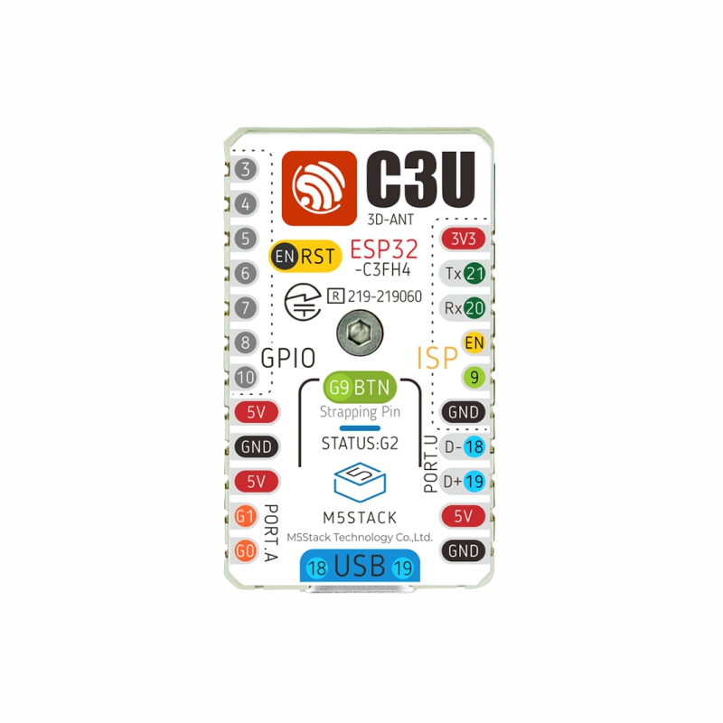

Programming the ESP32-C3 from the bare metal up
A guided tour of a complete program for the M5Stack M5Stamp C3U: the start-up code, the drivers, the C library and an interactive Lua console, with no operating system underneath.

C3U-Metal is a program for the ESP32-C3 chip on the M5Stamp C3U board. It does everything itself, from the first instruction after power-on to a prompt where you can type Lua, and it is small enough to read from start to finish. This manual goes through it in the order the board runs it.
It is written for members of a school engineering club: students and their teacher. You should have written a little code before, in C or Python for example. You don't need to know anything about electronics, assembly language or linkers. Each idea is explained the first time it appears, and Appendix B is a glossary you can come back to.
| Chapters | What they cover |
|---|---|
| 1 to 3 | What the project is, the board and the chip, and how to build the program and put it on the board. |
| 4 to 7 | Everything that happens between power-on and main(): the chip's ROM, the linker script, the C runtime and chip set-up. |
| 8 to 11 | The drivers and the C library: pins, the RGB LED, the USB console and newlib. |
| 12 and 13 | Lua, the interactive console, and the functions the board adds to Lua. |
| 14 | Crashes, debugging, and getting a stuck board back. |
| 15 and 16 | The lessons stored in the git history, and the exercises. |
| Appendices | A register reference, a glossary and a troubleshooting table. |
boot/crt0.S are relative to the C3U-Metal folder.> prompt.0x are hexadecimal. Section 2.2 explains them.The manual describes the main branch as it was in September 2026, including the eight exercises and their worked solutions. If a file has changed since, trust the file.
| Session | Read | Do |
|---|---|---|
| 1 | Chapters 1 to 3 | Install the tools, build and flash, play at the console, run the self-test. |
| 2 | Chapters 4 to 6 | Find the sections in the map file. Follow the boot in the debugger. |
| 3 | Chapters 7 to 9 | Drive an LED on a breadboard with the gpio functions. Measure the RGB LED's timing. |
| 4 | Chapters 10 to 13 | Trace print() down to the USB registers. Add a Lua function of your own. |
| 5 | Chapter 14 | Crash the board on purpose and read the report. |
| 6 onwards | Chapters 15 and 16 | Walk through the lessons in the history, then start the exercises. |
C3U-Metal is a program for the ESP32-C3 chip that does everything itself. There is no bootloader, no operating system and no framework. The chip's built-in start-up code jumps straight into our code, and every line that runs after that is in the repository.
Plug the board into a computer and open its console, and you get a prompt where you can type Lua, a small programming language. Each line runs on the board as soon as you press Enter. These examples come from the project's README.md:
> led(0, 0, 40) -- the RGB LED turns blue> for i = 1, 5 do led(40, 0, 0) delay(200) led(0, 0, 0) delay(200) end> gpio.output(4) gpio.write(4, 1) -- GPIO4 goes high> mem() -- how the RAM is being used> help() -- everything the board adds to Lua
Text after -- is a Lua comment. The functions led(), delay(), gpio.output(), mem() and help() are not part of Lua. C3U-Metal adds them, and this manual shows how, all the way down to the bits written into the chip.
Most programs run on top of other software. A program on a laptop runs on an operating system, which loads it, gives it memory, and handles the screen, the keyboard and the files for it. Programs for small chips usually have helpers too. Code that runs with nothing at all underneath it is called bare metal, and that is where C3U-Metal gets its name.
Here is how it compares with the two usual ways of programming an ESP32-C3:
| Arduino | ESP-IDF | C3U-Metal | |
|---|---|---|---|
| What you write | setup() and loop(), using Arduino libraries | a program that uses ESP-IDF's libraries | everything, from the first instruction |
| How your code is started | built on ESP-IDF, so it starts the same way | the chip's ROM loads a bootloader from flash; the bootloader loads the program and starts FreeRTOS | the ROM jumps straight to _start in boot/crt0.S |
| Operating system | FreeRTOS, hidden | FreeRTOS | none |
| Drivers | Arduino and ESP-IDF libraries | ESP-IDF components | our own, in drivers/ |
| Good for | getting something working quickly | large programs that need many features and several tasks at once | seeing how all of it works |
FreeRTOS is a small real-time operating system. It lets a program run several tasks that take turns on the CPU, and gives them timers and ways to pass messages to each other. A bootloader is a small program whose only job is to get the real program into memory and start it.
So why do without all of that? Because it hides the interesting parts. With C3U-Metal you can see how the chip starts, where each part of the program lives in memory, what a driver writes to the hardware, how printf gets its text to your screen, and what happens in a crash. The price is that C3U-Metal does far less than ESP-IDF: it runs no tasks, handles no interrupts and has no networking.
C3U-Metal uses the compiler, CMake, Python and the debugging tools that are installed with ESP-IDF. None of ESP-IDF's own code ends up on the board.
The source is sorted into folders, one for each layer. Lower layers know nothing about the layers above them.
Three more folders don't end up on the board: tools/ holds Python scripts that flash, monitor and test the board; docs/ holds diagrams, this manual and the exercises; solutions/ holds worked solutions to the exercises.
Everything comes with ESP-IDF v6.0.1, Espressif's development framework: the RISC-V GCC compiler, CMake and Ninja, Python with the pyserial and esptool packages, and OpenOCD and GDB for debugging. Other ESP-IDF versions will probably work, but only v6.0.1 has been tested.
. $HOME/esp/esp-idf/export.sh.riscv32-esp-elf-gcc --version
cmake --version
python -c "import serial, esptool; print('ok')"sudo usermod -aG dialout $USER, then log out and back in. For debugging, also install OpenOCD's USB rules: sudo cp $OPENOCD_SCRIPTS/../contrib/60-openocd.rules /etc/udev/rules.d/Run every command in this manual in that terminal, in the C3U-Metal folder. In an ordinary terminal the compiler and Python packages won't be found. If you use VS Code, start it from the ESP-IDF terminal with code . for the same reason.
cmake --preset default # once: sets up the build folder cmake --build build -t flash # compile, link and write it to the board python tools/monitor.py # the Lua console; Ctrl-] quits
The first build also compiles Lua, so it takes a little longer. After that, only what changed is rebuilt. In the monitor, press Enter for a > prompt and type help().
Only one program can use the serial port at a time, so close the monitor before you flash again. Any serial terminal works instead of monitor.py, for example PuTTY, MobaXterm or screen, and the speed setting doesn't matter over USB. Chapter 3 explains each of these commands.
Before looking at the code, it helps to know what the code talks to: a small board, one chip with a RISC-V CPU inside, a few kinds of memory, and a large number of hardware registers.
The M5Stamp C3U is a small board built around Espressif's ESP32-C3 chip. C3U-Metal uses only a few of its parts. The picture on the cover labels pins G2, G9 and so on; in the code they are GPIO2, GPIO9. GPIO means general-purpose input/output: a pin the program can switch high or low, or read.
| Part | Pin | Used for |
|---|---|---|
| RGB LED (SK6812) | GPIO2 | led(), chapter 9 |
| Button | GPIO9 | button(); also download mode (4.2) |
| USB-C socket | GPIO18, GPIO19 | the console and the debugger, chapter 10 |
| Edge pins | for example GPIO4 | your own circuits, chapter 8 |
The pins are defined once, in board/board.h, so no other file has to repeat the numbers:
/* Pins */#define LED_PIN 2 /* data line of the SK6812 RGB LED */#define BTN_PIN 9 /* the button pulls the pin to ground: reads 0 while pressed. Held while plugging in, it starts the chip's download mode. */
Pulling a pin to ground means connecting it to 0 volts, so the pin reads as 0. Chapter 8 explains why the button reads 1 when it is not pressed.
Hardware code is full of numbers such as 0x6000403C. The 0x means the number is written in hexadecimal, base 16, with the digits 0 to 9 and A to F. Hexadecimal is used because each digit stands for exactly four bits, so you can see which bits are set: 0x200 is 0010 0000 0000 in binary, which is bit 9 on its own.
A bit is a single 0 or 1. The bits of a number are counted from 0, starting at the right, so a 32-bit value has bits 0 to 31. Eight bits make a byte, and on this chip 32 bits (4 bytes) make a word. A group of bits with one meaning is called a field and is written with its highest and lowest bit: bits 11:10 means bits 11 and 10 taken together.
C, Lua and assembly all use the same operators to work with bits:
| Written | Means | Example |
|---|---|---|
1u << 9 | a number with only bit 9 set (u makes it unsigned) | 0x00000200 |
a | b | bits that are set in a, in b, or in both | set a bit: x | (1u << 9) |
a & b | bits that are set in both | test a bit: x & (1u << 9) |
~a | every bit flipped | ~0xFFFu is 0xFFFFF000 |
x >> 9 | shift right: bit 9 moves down to bit 0 | (x >> 9) & 1u is bit 9 of x |
A CPU understands a fixed set of instructions, such as "add these two numbers" or "jump to this address". The CPU in the ESP32-C3 uses RISC-V, an open instruction set that anyone may use. RISC-V comes in pieces, and CMakeLists.txt tells the compiler exactly which pieces this chip has:
# The ESP32-C3's instruction set: RV32IMC plus the CSR and FENCE.I instructions.# It must match a variant of the toolchain's newlib and libgcc, and is used for# compiling and for linking.set(ARCH_FLAGS -march=rv32imc_zicsr_zifencei -mabi=ilp32)
rv32: 32-bit RISC-V. Addresses and the CPU's registers are 32 bits wide.i: the basic integer instructions. m: multiply and divide.c: compressed instructions. Common instructions take 16 bits instead of 32, which makes the program smaller.zicsr: the instructions that read and write control and status registers (section 2.7). zifencei: the FENCE.I instruction.-mabi=ilp32: in C, int, long and pointers are all 32 bits.There is no f, so the chip has no floating-point instructions. The compiler turns maths with float and double into calls to helper functions in libgcc, one of the libraries linked into the program.
A register is a small, very fast piece of storage. The CPU has 32 of them for doing its work, plus the program counter. RISC-V gives them numbers, but code uses their names, which describe their jobs:
| Name | Job | Where you meet it |
|---|---|---|
pc | program counter: the address of the instruction about to run | read_registers.py |
sp | stack pointer: the top of the stack (chapter 6) | crt0.S step 1 |
ra | return address: where a function goes back to when it returns | the crash report |
gp | global pointer: a fixed address near the small global variables (5.7) | crt0.S, the linker script |
a0 to a7 | arguments passed to a function; a0 also carries its result | sk6812.S, trap.S |
t0 to t6 | temporary values that a called function may overwrite | the loops in crt0.S |
s0 to s11 | saved values that a function must put back before it returns | step 1's main.S |
zero | always 0; writing to it does nothing | sw zero, 0(t1) in crt0.S |
The rules about which register carries what, and which ones a function may change, are the calling convention. They are what let C call assembly and assembly call C. drivers/sk6812.S, for example, promises that it "uses only a0-a4 and t0-t5, which the calling convention lets it overwrite", so C code can call it safely.
The chip uses three kinds of memory:
0x40000000. It can't be changed. It runs first after every reset (chapter 4).0x42000000 for running code and at 0x3C000000 for reading data.0x3FCD0000 up, so C3U-Metal uses the 320 KB below that, from 0x3FC80000. The same RAM also appears at 0x40380000, and code in RAM has to be run from that address.The CPU sees all of these, and the hardware registers too, as one long row of numbered bytes from 0x00000000 to 0xFFFFFFFF. This is the address space, and each part of the chip is given a range in it:
A peripheral is a part of the chip that isn't the CPU: the GPIO pins, the USB port, timers, watchdogs. Each is controlled through its own hardware registers. Writing a value to a register changes what the hardware does, and reading one tells you what the hardware is doing.
On the ESP32-C3, hardware registers have addresses, just like memory. To switch a pin on, the program writes a number to an address. This is called memory-mapped I/O (I/O means input and output). C3U-Metal's C code reaches every register through one macro:
#ifndef __ASSEMBLER__#include <stdint.h>#define REG(addr) (*(volatile uint32_t *)(addr)) /* read or write a 32-bit hardware register */#endif
(addr) is a plain number, such as 0x6000403C.(volatile uint32_t *) tells C to treat that number as the address of a 32-bit unsigned value.* in front reads or writes the value at that address. So REG(GPIO_IN) reads the GPIO_IN register, and REG(GPIO_OUT_W1TS) = 1u << pin; writes one.volatile warns the compiler that the value can change by itself and that every read and write matters. Without it, the compiler might decide that writing the same register twice is pointless and remove one of the writes.The #ifndef __ASSEMBLER__ around it is there because the same header is also included by assembly files, which don't understand C.
At the console, type hex(peek(0x6000403C)). That reads GPIO_IN, which has one bit for each pin. Hold the button and type it again: bit 9 changes, so the value changes by 0x200.
Some registers belong to the CPU itself and have no memory address. RISC-V calls them control and status registers, or CSRs. Each has a number instead, and two special instructions use them: csrr reads a CSR into an ordinary register, and csrw writes one. C has no way to produce those instructions, which is why a few small functions are written in assembly.
C3U-Metal uses the standard trap CSRs, mtvec, mcause, mepc, mtval and mscratch, which chapter 14 explains. It also uses three CSRs that Espressif added to count CPU cycles, numbered 0x7E0 to 0x7E2 (section 7.4).
A CPU does its work in steps timed by a clock signal. The board has a 40 MHz crystal, which makes 40 million clock cycles a second. After a reset the chip divides that by 2 and runs the CPU at 20 MHz. SystemInit() switches it to the full 40 MHz (chapter 7), and board.h records that speed for the rest of the code:
/* * CPU speed. SystemInit() (chip/system_esp32c3.c) runs the CPU straight from * the board's 40 MHz crystal, so the cycle counter counts CPU_MHZ million * cycles a second. Delays, uptime and the LED's pulses are all timed with it. * Files that only work at 40 MHz stop the build with #error if this changes. */#define CPU_MHZ 40#define CPU_CYCLES_PER_MS (CPU_MHZ * 1000)#define CPU_CYCLES_PER_US CPU_MHZ
At 40 MHz one cycle lasts 25 nanoseconds (a nanosecond is a billionth of a second). The cycle counter counts these cycles, so C3U-Metal uses it as its clock: 40 000 cycles make a millisecond and 40 make a microsecond. That is exactly what CPU_CYCLES_PER_MS and CPU_CYCLES_PER_US say.
Your computer turns the source files into a program for a different CPU, then writes that program into the board's flash. This chapter covers the build files and the Python tools that talk to the board.
Your computer's CPU is not a RISC-V CPU, so its ordinary compiler can't make programs for the board. A cross-compiler runs on one kind of computer and produces code for another. Espressif's is riscv32-esp-elf-gcc, installed with ESP-IDF. Building has three stages:
.c file becomes an object file, machine code sorted into named sections (chapter 5)..S file goes through the C preprocessor, so #include and #define work, and then becomes an object file too.boot/c3u-metal.ld.The results go in the build folder. c3u-metal.elf is the program with its addresses, names and debugging information, for the debugger. c3u-metal.bin holds only the bytes that go into flash. c3u-metal.map reports where every section, function and variable went. CMake reads CMakeLists.txt and writes instructions for Ninja, which runs the compiler and only rebuilds what has changed.
CMake normally builds for the computer it runs on. A toolchain file tells it to build for somewhere else:
set(CMAKE_SYSTEM_NAME Generic) # "Generic": no operating system on the targetset(CMAKE_SYSTEM_PROCESSOR riscv32)set(CMAKE_C_COMPILER riscv32-esp-elf-gcc)set(CMAKE_ASM_COMPILER riscv32-esp-elf-gcc) # gcc runs the C preprocessor on .S files, then assembles them# CMake checks the compiler by building a small test program. A normal program# can't link without our linker script and crt0.S, so build a library instead.set(CMAKE_TRY_COMPILE_TARGET_TYPE STATIC_LIBRARY)# Programs (such as Python) come from this PC; libraries and headers only from the toolchain.set(CMAKE_FIND_ROOT_PATH_MODE_PROGRAM NEVER)set(CMAKE_FIND_ROOT_PATH_MODE_LIBRARY ONLY)set(CMAKE_FIND_ROOT_PATH_MODE_INCLUDE ONLY)
Generic means there is no operating system on the target. The same gcc compiles C and assembles .S files.crt0.S, so CMake is told to build a library for the test instead.CMakePresets.json saves typing. cmake --preset default means: use Ninja, put the build in build, use this toolchain file, and write compile_commands.json so that VS Code knows each file's compiler options.
The file starts by choosing the toolchain file and declaring a project with C and assembly (ASM) files. ARCH_FLAGS is the instruction set from section 2.3. It is used for linking as well as compiling, because the linker picks the matching version of the C library. Then comes Lua:
add_library(lua STATIC ${LUA_FILES})target_compile_options(lua PRIVATE ${ARCH_FLAGS} -O2 -g -Wall -Wextra)target_include_directories(lua PUBLIC ${LUA_DIR})# 32-bit integers and floats. PUBLIC, because our C code must use the same# setting, or it and Lua would disagree about what a Lua number is.target_compile_definitions(lua PUBLIC LUA_32BITS)
Lua is built once as a static library, a bundle of object files the linker takes pieces from. The list above these lines names the files: the core of Lua, and the standard libraries that make sense without files or an operating system, so no io, os, package or debug. LUA_32BITS is explained in section 12.1.
set(SOURCES boot/crt0.S # the C runtime: the chip starts running here boot/stack_check.c chip/system_esp32c3.c # chip setup chip/cpu.S chip/trap.S drivers/gpio.c drivers/sk6812.c drivers/sk6812.S drivers/usb_serial.c drivers/uptime.c libc/syscalls.c # what newlib needs from an "operating system" app/main.c app/repl.c app/lua_hw.c app/lua_sys.c app/trap_report.c)set(INCLUDE_DIRS boot chip board drivers libc app)
That list is the whole of C3U-Metal's own code. The lines after it let the build take some files from a worked solution instead (section 16.4); in a normal build they change nothing.
add_executable(c3u-metal ${SOURCE_PATHS})set_target_properties(c3u-metal PROPERTIES SUFFIX .elf)target_include_directories(c3u-metal PRIVATE ${INCLUDE_PATHS})target_compile_options(c3u-metal PRIVATE ${ARCH_FLAGS} -g -Og -Wall -Wextra -fno-asynchronous-unwind-tables -fno-unwind-tables) # no C++ exceptions, so no unwind tablespick_path(boot/c3u-metal.ld LINKER_SCRIPT)target_link_options(c3u-metal PRIVATE ${ARCH_FLAGS} -nostdlib -nostartfiles # our own crt0.S; the libraries are listed below -T${LINKER_SCRIPT} -Wl,-Map=${CMAKE_CURRENT_BINARY_DIR}/c3u-metal.map)set_target_properties(c3u-metal PROPERTIES LINK_DEPENDS ${LINKER_SCRIPT}) # relink when it changestarget_link_libraries(c3u-metal PRIVATE lua -Wl,--start-group c m gcc -Wl,--end-group) # newlib, its maths library, and compiler helpers
-g keeps debugging information, -Og optimises without confusing the debugger, and -Wall -Wextra turn on most warnings.-nostdlib -nostartfiles stop the compiler adding its own start-up code and default libraries. C3U-Metal has its own start-up code, crt0.S, and names the libraries it wants.-T gives the linker script, and -Map asks for the map file.c (newlib, the C library), m (its maths functions) and gcc (compiler helpers). The group lets them use each other's functions in any order.# The raw flash image. It starts with the direct-boot magic number from the linker script.get_filename_component(TOOLCHAIN_BIN ${CMAKE_C_COMPILER} DIRECTORY)find_program(RISCV_OBJCOPY riscv32-esp-elf-objcopy HINTS ${TOOLCHAIN_BIN} REQUIRED)find_program(RISCV_SIZE riscv32-esp-elf-size HINTS ${TOOLCHAIN_BIN} REQUIRED)set(IMAGE ${CMAKE_CURRENT_BINARY_DIR}/c3u-metal.bin)add_custom_command(TARGET c3u-metal POST_BUILD COMMAND ${RISCV_OBJCOPY} -O binary $<TARGET_FILE:c3u-metal> ${IMAGE} COMMAND ${RISCV_SIZE} $<TARGET_FILE:c3u-metal> BYPRODUCTS ${IMAGE} VERBATIM)
objcopy -O binary keeps only the bytes that belong in flash, and size prints how big each part of the program is. The end of the file adds targets that run the Python tools. You name a target with -t: flash builds first, and selftest flashes first.
| Command | What it does |
|---|---|
| cmake --preset default | Once, and after changing CMakeLists.txt: set up the build folder. |
| cmake --build build | Compile and link: c3u-metal.elf, .bin and .map. |
| cmake --build build -t flash | Build, then write the program to the board. |
| python tools/monitor.py | The Lua console; Ctrl+] quits. Also -t monitor. |
| python tools/selftest.py | Type 15 checks into the console and report PASS or FAIL. |
| cmake --build build -t selftest | Flash, then run the self-test. |
| python tools/read_registers.py | Pause the CPU for a moment over JTAG and show its registers (section 14.6). |
The build folder remembers full paths. If you get build errors after moving or copying the project, delete the build folder and run cmake --preset default again.
The tools share tools/board.py, which finds the board by its USB IDs. Every USB device reports a vendor ID (who made it) and a product ID. The ESP32-C3's built-in USB port reports Espressif's IDs whatever program is running, so the tools find the board even when the program on it is broken:
ESPRESSIF_VID = 0x303AUSB_SERIAL_JTAG_PID = 0x1001NOT_FOUND = ("M5Stamp C3U not found. Plug it in. If it still isn't found, unplug it, " "hold its button while plugging it back in, and try again.")def find_port(): """The board's serial port name (such as COM11 or /dev/ttyACM0), or None.""" for port in sorted(list_ports.comports(), key=lambda p: p.device): if port.vid == ESPRESSIF_VID and port.pid == USB_SERIAL_JTAG_PID: return port.device return None
When board.py opens the port, it first switches off the DTR and RTS lines, because a program that changes them can reset the board (section 10.8). If the port is busy, it tries again for a few seconds.
# esptool is a Python package, so run it with this same Python. command = [sys.executable, "-m", "esptool", "--chip", "esp32c3", "--port", port, "write-flash", "0x0", args.image] result = subprocess.run(command)
flash.py runs esptool, Espressif's flashing tool, with the same Python. esptool resets the chip into download mode (section 4.2), writes the image at flash offset 0x0, where the ROM looks for a direct-boot program, and resets the board so the new program starts. Writing at offset 0 also replaces any ESP-IDF bootloader.
A terminal for the Lua console. Every key goes to the board, including Ctrl+C, which stops a running Lua program; Ctrl+] quits. If the board resets or is unplugged, the monitor waits and asks for a fresh prompt when it comes back. It also takes piped input, typing each line once the board shows a prompt: echo print(1 + 2) | python tools/monitor.py
The self-test types Lua into the console and checks each answer, printing PASS or FAIL. Its exit status is 1 if anything failed. Leave GPIO4 unconnected (the test drives it), don't press the button, and close any monitor first. The 15 checks are:
print(1 + 2) prints 3delay(250) takes 250 msbutton() is false while not pressedled(0, 0, 0) is acceptedled() refuses 300os or io library (there are no files)mem() works, and the stack has not overflowedInstall the C/C++ and CMake Tools extensions, which .vscode/extensions.json recommends, and start VS Code from the ESP-IDF terminal with code .. Terminal › Run Task then lists Configure, Build, Flash, Monitor, Self-test and Read registers, which run the commands above. .vscode/settings.json points the C/C++ extension at build/compile_commands.json and tells CMake Tools to use the presets. Debugging is covered in section 14.7.
Booting is everything that happens between power-on and the program doing its real work. For C3U-Metal it is short: the chip's ROM makes two checks and then jumps straight into our code.
When the board gets power, or is reset, the CPU starts running the ROM: code that Espressif built into the chip at address 0x40000000. Nobody can change it, so it always works, whatever is in flash. At this moment it is the only code the chip knows about. It checks two things.
Is GPIO9 low? On the C3U, GPIO9 is the button, and pressing the button connects the pin to ground. If the button is held while the chip starts, the ROM goes into download mode and waits for esptool to send a new program over USB.
A pin that the chip reads at reset to decide how to start is called a strapping pin, and the board's picture labels G9 that way. Because download mode happens before any of our code runs, it works whatever is on the board, even a program that crashes straight away. It is your way back from any mistake (section 14.9).
Does flash start with the direct-boot magic number? A magic number is a value chosen because it is very unlikely to appear by accident, so it can be used to recognise something. If the first 8 bytes of flash hold 0xAEDB041D twice, the ROM does a direct boot:
0x42000000 for running code, and at 0x3C000000 for reading data.0x42000008, which is flash offset 8, just past the two magic numbers.Our linker script puts the magic number and our first instruction exactly there:
/* Flash offset 0: the ROM only runs our code if it finds this value twice. */ .header : AT(0) { LONG(0xAEDB041D) LONG(0xAEDB041D) } > irom /* The ROM jumps to 0x42000008, so _start (section .text.entry) must be exactly here. */ .text.entry ORIGIN(irom) + 8 : { KEEP(*(.text.entry)) } > irom
.header : AT(0) makes a section called .header, stored at offset 0 of the image.LONG(0xAEDB041D) puts four bytes holding that value into it, and the second line does it again.> irom places the section in the irom memory region, which starts at 0x42000000 (chapter 5)..text.entry ORIGIN(irom) + 8 places the next section at exactly 0x42000008.KEEP(*(.text.entry)) collects the .text.entry section from every object file. crt0.S is the only file with one, and it holds _start. KEEP stops the linker throwing the section away, even though nothing in the program calls it.Because tools/flash.py writes c3u-metal.bin at flash offset 0, the magic number ends up exactly where the ROM looks.
At the console, type hex(peek(0x42000000)). It reads the first word of flash through the code view and prints 0xaedb041d, the magic number.
If the magic number isn't there, the ROM boots the normal way. It loads a second-stage bootloader from flash. The bootloader sets up more of the chip, loads the application and starts FreeRTOS. Arduino programs for this chip start the same way.
C3U-Metal skips all of that. Nothing is lost by trying it: flashing an ordinary ESP-IDF or Arduino program writes a bootloader back to the start of flash, replacing C3U-Metal.
When _start runs, almost nothing is ready for a program:
| What | State at _start | Who fixes it |
|---|---|---|
Stack pointer sp, global pointer gp | whatever the ROM left in them | crt0.S step 1 |
Trap vector mtvec | points into the ROM | crt0.S step 3 |
| Three watchdogs | running: they reset the chip unless something stops or feeds them | SystemInit() |
| CPU clock | 20 MHz, the 40 MHz crystal divided by 2 | SystemInit() |
| RAM | leftovers: .data has no starting values and .bss isn't zero | crt0.S step 5 |
A watchdog is a timer that resets the chip if the program doesn't reset the timer, or "feed" it, often enough. It rescues a program that has got stuck. Chapter 7 shows how C3U-Metal deals with all three.
SystemInit() is written in C, so it needs a stack first..data and .bss are ready, so it must not use global variables.A debug session in VS Code (section 14.7) normally stops at main(), after the boot has finished. To watch the boot from the very first instruction, type these into VS Code's Debug Console:
-exec monitor reset halt -exec thbreak _start -exec continue
monitor reset halt asks OpenOCD to reset the chip and stop it before the ROM runs. thbreak _start sets a temporary hardware breakpoint on our first instruction, and continue lets the ROM run until it gets there. Then step one instruction at a time and watch sp and gp change.
The linker script boot/c3u-metal.ld decides where every part of the program lives: which bytes go in flash, which are copied into RAM, and where the stack and heap are. It is the first file the README suggests reading.
A compiler doesn't decide where things go in memory. It sorts what it produces into named sections, and the linker places each section at an address. The main sections have standard names:
| Section | What goes in it | Where it has to be |
|---|---|---|
.text | machine code | where the CPU can run it: flash |
.rodata | constants and strings | where it can be read: flash |
.data | global and static variables with a starting value | in RAM, because they change; but their starting values must survive power-off, so they are stored in flash and copied at start-up |
.bss | global and static variables that start at zero | in RAM; nothing is stored, the RAM is cleared at start-up |
.sdata, .sbss | small variables from .data and .bss | the same, but near gp (5.7) |
.iram1 | C3U-Metal's own name for code that must run from RAM | in RAM; stored in flash and copied at start-up |
Step 2 of the lessons in the git history had one variable of each kind, to check that its start-up code worked:
/* * One variable of each kind, so the runtime can be checked on the board: * the LED only shows led_color if .data was copied, loop_count only counts up from * 0 if .bss was cleared, and build_name is only readable if .rodata is mapped. */uint32_t led_color = 0x002000; /* .data (0x00GGRRBB: dim red) */uint32_t loop_count; /* .bss */__attribute__((used))static const char build_name[] = "C3U-Metal C runtime"; /* .rodata */
Local variables, declared inside a function, are not in any of these sections. They live on the stack while the function runs (chapter 6).
Look again at .data: its bytes are stored in one place (flash) but used in another (RAM). So a section can have two addresses. Linkers call them the load address, where the bytes are stored in the image, and the run address, where the program expects to find them while it runs. In a linker script, AT(...) sets the load address. The address written before the colon, or the memory region after >, sets the run address. For most sections the two are the same.
OUTPUT_ARCH("riscv")ENTRY(_start)MEMORY{ irom (rx) : ORIGIN = 0x42000000, LENGTH = 4M /* flash, mapped for running code */ drom (r) : ORIGIN = 0x3C000000, LENGTH = 4M /* the same flash, mapped for reading data */ ram (rw) : ORIGIN = 0x3FC80000, LENGTH = 0x50000 /* SRAM for us; the ROM uses the area above */ iram (rwx) : ORIGIN = 0x40380000, LENGTH = 0x50000 /* the same SRAM, at the address it can run code from */}STACK_SIZE = 0x10000; /* 64 KB: Lua's parser recurses on the C stack */IRAM_TO_DRAM = 0x40380000 - 0x3FC80000; /* 0x700000: same RAM byte, code address minus data address */
OUTPUT_ARCH and ENTRY(_start) record the CPU type and the first instruction in the .elf file, for tools such as the debugger. The raw .bin image has no room for either; what the ROM relies on is the address 0x42000008.MEMORY names four regions. The letters say what each allows: r read, w write, x execute (run code). irom and drom are the two views of the same flash. ram and iram are the two views of the same 320 KB of RAM (0x50000 bytes).STACK_SIZE is 64 KB, because Lua's parser calls itself deeply and every call uses stack.IRAM_TO_DRAM is the distance between the two RAM views, 0x700000./* All other code that runs straight from flash. */ .text : { *(.text .text.*) . = ALIGN(4); } > irom /* How much flash the code uses: also the flash offset where .rodata starts. */ _flash_used = . - ORIGIN(irom); /* * .rodata: constants and strings. The CPU reads data through the DROM mapping, * so the address is DROM + the flash offset, and AT() stores the bytes at that * same flash offset in the image. The sections after it follow the same way. */ .rodata ORIGIN(drom) + _flash_used : AT(_flash_used) { *(.rodata .rodata.* .srodata .srodata.*) . = ALIGN(4); } > drom
*(.text .text.*) collects every .text section from every object file and library.. is the location counter, the address the linker has reached. . = ALIGN(4) moves it up to a multiple of 4._flash_used = . - ORIGIN(irom) is how many bytes of flash the code takes, which is also the flash offset where the next section will be stored.Now the trick. The byte at flash offset N can be read at 0x3C000000 + N. So .rodata gets the run address ORIGIN(drom) + _flash_used and the load address AT(_flash_used). Stored right after the code, it is read in place through the DROM view, and nothing needs copying.
After .rodata the script adds three small sections, .preinit_array, .init_array and .fini_array, which hold lists of functions. newlib's __libc_init_array() runs the functions listed in the first two before main(). C3U-Metal has none, but C++ constructors would go here. PROVIDE_HIDDEN defines the start and end symbols newlib looks for. _drom_used is the flash offset just past all the read-only data.
/* * .iram.text: code that must never wait on the flash cache (the LED's timed * pulses in sk6812.S). It runs from RAM at the start of our area, is stored in flash after * the read-only data, and crt0.S copies it into RAM before main(). */ .iram.text ORIGIN(iram) : AT(_drom_used) { _iram_text_start = .; *(.iram1 .iram1.*) . = ALIGN(4); _iram_text_end = .; } > iram _iram_text_lma = ORIGIN(drom) + LOADADDR(.iram.text); /* crt0.S reads the code from here ... */ _iram_text_dram = _iram_text_start - IRAM_TO_DRAM; /* ... and writes it to the same RAM here */
.iram.text runs at ORIGIN(iram), 0x40380000, and is stored in flash at _drom_used. It collects sections named .iram1, which drivers/sk6812.S uses for sk6812_send_grb. Three addresses matter to the start-up code:
_iram_text_start and _iram_text_end: the run addresses of the code._iram_text_lma: where the stored copy can be read, through the DROM view._iram_text_dram: the same RAM as _iram_text_start, but at its data address. The CPU runs code in RAM only from the instruction-bus address (0x4038xxxx), but writes to RAM go through the data-bus address (0x3FC8xxxx). crt0.S copies the code in through the data address, and the code later runs at the instruction address.Code in flash can pause for a moment while the chip's flash cache loads it. A pause in the middle of an LED pulse would change the colour. Code in RAM never waits (chapter 9).
/* * .data: variables with a starting value. They live in RAM just after the * RAM code, and their starting values are stored in flash after it too; * crt0.S copies them across. */ .data ORIGIN(ram) + SIZEOF(.iram.text) : AT(LOADADDR(.iram.text) + SIZEOF(.iram.text)) { _data_start = .; *(.data .data.*) __SDATA_BEGIN__ = .; *(.sdata .sdata.*) /* small variables, reachable through gp */ . = ALIGN(4); _data_end = .; } > ram _data_lma = ORIGIN(drom) + LOADADDR(.data); /* where crt0.S reads the starting values */ /* .bss: variables that start at zero. Nothing is stored in flash; crt0.S clears it. */ .bss (NOLOAD) : { _bss_start = .; *(.sbss .sbss.*) /* small ones first, near gp */ *(.bss .bss.* COMMON) . = ALIGN(4); _bss_end = .; } > ram
.data runs in RAM straight after the RAM code, at ORIGIN(ram) + SIZEOF(.iram.text). Its starting values are stored in flash straight after the RAM code's stored copy.__SDATA_BEGIN__ marks where the small variables start. _data_lma is where crt0.S reads the starting values, through the DROM view..bss is NOLOAD: it takes space in RAM but no bytes in the image. COMMON collects an old C style of uninitialised global variable./* * gp points into the small-variable area so GCC can reach variables within * 2 KB of it in one instruction. This is the formula GNU ld uses by default. */ __global_pointer$ = MIN(__SDATA_BEGIN__ + 0x800, MAX(_data_start + 0x800, _bss_end - 0x800));
Reading a global variable normally takes two instructions: one to load its 32-bit address, one to read from it. But if the variable is within 2 KB (0x800 bytes) either side of the address in gp, one instruction can reach it by an offset from gp. So gp is set once at start-up and never changes, and the linker puts the small variables near it. This formula is GNU ld's usual way of choosing gp so the small variables fit in that 4 KB window. In the example build below, gp is 0x3FC8086C.
/* Stack: the top STACK_SIZE bytes of our RAM, growing down. */ _stack_top = ORIGIN(ram) + LENGTH(ram); _stack_bottom = _stack_top - STACK_SIZE; /* Heap: everything between the variables and the stack, handed out by _sbrk() in syscalls.c. */ _heap_start = ALIGN(_bss_end, 8); _heap_end = _stack_bottom; ASSERT(_heap_end >= _heap_start + 0x20000, "c3u-metal.ld: less than 128 KB left for the heap") /* Unwinding tables are only for C++ exceptions and debuggers that don't use DWARF. */ /DISCARD/ : { *(.eh_frame .eh_frame_hdr) }
_stack_top is 0x3FCD0000, and the stack grows down from there.malloc() hands out. It is everything between the end of .bss and the bottom of the stack. ALIGN(_bss_end, 8) starts it on a multiple of 8.ASSERT makes the link fail with that message if less than 128 KB is left for the heap./DISCARD/ throws away unwinding tables, which only C++ exceptions and some debuggers use.These addresses come from one build, recorded in docs/memory-map.md. Yours will move a little as the code changes; build/c3u-metal.map has the exact values for your build.
crt0.S copies the bytes into RAM before main()..iram.text bytes are also the code at 0x40380000.Nothing stops the stack growing down into the heap if a program uses more than 64 KB of stack. boot/stack_check.c can only tell afterwards (section 13.6).
Names such as _heap_start are linker symbols: names for addresses, defined in the linker script. C code declares the ones it needs in boot/linker_symbols.h:
extern char _heap_start[], _heap_end[]; /* the heap, handed out by _sbrk() in syscalls.c */extern char _stack_bottom[], _stack_top[]; /* the stack grows down from _stack_top */
There is no variable stored at those addresses. Declaring the symbol as an array of char lets C use its name as an address without ever reading from it. Subtracting two of them gives a size in bytes: main.c prints the heap size as (_heap_end - _heap_start) / 1024 KB.
To see the real addresses after a build:
riscv32-esp-elf-objdump -h build/c3u-metal.elf # every section: address, size, flash offset riscv32-esp-elf-nm -n build/c3u-metal.elf | more # every symbol, in address order
In objdump -h, VMA is the run address and LMA the load address. You can also search build/c3u-metal.map for any function or variable name, and at the console mem() shows how the heap and stack are being used.
boot/crt0.S holds the first instructions of our program. It is 50 lines of assembly that turn the chip's leftovers into a place where C code can run. The name is traditional: C runtime, part zero.
A C program takes several things for granted that a freshly reset chip doesn't have:
sp pointing at it.gp to reach small global variables..data, and zeros in .bss.main().On a laptop, the operating system and the compiler's own start-up files do this. Here crt0.S does it, which is why CMakeLists.txt links with -nostartfiles.
Assembly language is a readable form of the CPU's instructions, one per line. You only need a handful to read crt0.S:
| You see | It means |
|---|---|
_start: | a label: a name for the address of the next instruction |
7: … 7b, 8f | numbered local labels. 7b is the nearest 7: backwards, 8f the nearest 8: forwards |
.section .text.entry, "ax" | put what follows into this section; "ax" means it takes memory and can be executed |
.global _start | let other files, and the linker script, see this label |
.option push / pop | save the assembler's options, change them for a few lines, then restore them |
la sp, _stack_top | load address: put the address of a symbol into a register |
li t1, STACK_FILL | load immediate: put a number into a register |
sw t1, 0(t0) | store word: write the 32 bits in t1 to the address in t0, plus 0 |
lw t3, 0(t0) | load word: read 32 bits from the address in t0 into t3 |
addi t0, t0, 4 | t0 = t0 + 4. add and sub do the same with two registers |
ori t0, t0, 1 | t0 = t0 | 1 |
j 8f | jump |
bltu t0, sp, 7b | branch if less than, unsigned: jump to 7b if t0 < sp |
call SystemInit / ret | call a function, setting ra so it can come back / go back to the address in ra |
csrw mtvec, t0 | write a CSR (section 2.7) |
A word is 32 bits, which is 4 bytes. That is why the copying loops below add 4 each time.
The comment at the top of the file lists the seven steps:
* 1. sp and gp so C functions can run * 2. fill the stack with STACK_FILL, so stack_check.c can measure its use * 3. mtvec traps go to the crash report (chip/trap.S) * 4. SystemInit() watchdogs, clock, cycle counter (no global variables yet) * 5. RAM code, .data, .bss copy code and starting values from flash; zero the rest * 6. __libc_init_array() newlib runs any start-up functions (constructors) * 7. main()
.section .text.entry, "ax" .global _start_start: /* * 1. Stack pointer and global pointer, both from the linker script. * "norelax" stops the linker rewriting these two instructions to be * relative to gp, which would use gp before it has a value. */ .option push .option norelax la sp, _stack_top la gp, __global_pointer$ .option pop
The stack is an area of memory that functions use as scratch space. When a function is called it moves sp down by as much space as it needs, keeps its local variables and saved registers there, and moves sp back up when it returns. The next call reuses the same space. Because every C function does this, the stack must exist before any C function runs. la sp, _stack_top points sp at the top of the stack area from the linker script.
STACK_FILL, so the words that still hold that value have never been used.The global pointer comes from the linker script too (section 5.7). The .option norelax lines matter. Linker relaxation is an optimisation in which the linker shortens instructions where it can, and one way it does that is by loading addresses relative to gp. For these two lines that would be a disaster, because gp has no value yet: the second line is the one setting it. norelax turns the optimisation off for just these lines, and .option pop turns it back on.
/* 2. Fill the whole stack with STACK_FILL. Nothing has been pushed yet. */ la t0, _stack_bottom li t1, STACK_FILL j 8f7: sw t1, 0(t0) addi t0, t0, 48: bltu t0, sp, 7b
#define STACK_FILL 0x5741C4ED /* any value unlikely to be pushed by chance */This loop writes STACK_FILL into every word of the stack, from the bottom up to sp:
t0 starts at the bottom of the stack and t1 holds the fill value.j 8f jumps straight to the test, so an empty range would do nothing.7: the value is stored at t0, and t0 moves up one word.8:, if t0 is still below sp, the loop goes back to 7.Later, any word that still holds 0x5741C4ED has never been used. That lets mem() report the most stack ever used, and lets the console warn if the stack ran past its bottom (section 13.6). The file includes stack_check.h so the value is written in one place only.
/* 3. Traps (bad instruction, bad address) go to the crash report. +1 selects vectored mode. */ la t0, trap_vector_table ori t0, t0, 1 csrw mtvec, t0
A trap is the CPU abandoning what it was doing because something went wrong, such as an instruction it doesn't understand. The CPU then jumps to the address in the mtvec CSR. This step points mtvec at our trap table in chip/trap.S, so from now on any crash prints a report. The +1, done with ori, selects vectored mode. Chapter 14 explains both.
/* 4. Chip setup, in C. It runs before step 5, so it must not use global variables. */ call SystemInit
SystemInit() is a C function in chip/system_esp32c3.c that stops the watchdogs and speeds up the clock (chapter 7). It can be called now because there is a stack. It must not use global variables, because their starting values haven't been copied yet. Doing it this early stops the watchdogs before anything slow happens.
/* * 5a. RAM code (.iram.text): copy it from flash into RAM. It is written * through the RAM's data address and later runs at its code address; * both are the same memory. */ la t0, _iram_text_lma la t1, _iram_text_dram la t2, _iram_text_start la t3, _iram_text_end sub t3, t3, t2 /* t3 = bytes to copy */ add t2, t1, t3 /* t2 = end address, as a data address */ j 6f5: lw t4, 0(t0) sw t4, 0(t1) addi t0, t0, 4 addi t1, t1, 46: bltu t1, t2, 5b
First the RAM code. The four la lines load the addresses from section 5.5:
t0: where the code is stored, read through the DROM view.t1: where it goes, at the RAM's data address.t2 and t3: the start and end of the code at its run address. sub turns them into a size, and add turns that into the end address on the data side.The loop then copies one word at a time until t1 reaches t2. Both are data addresses, so the comparison is fair.
/* 5b. .data: copy the starting values from flash (read through DROM) into RAM */ la t0, _data_lma la t1, _data_start la t2, _data_end j 2f1: lw t3, 0(t0) sw t3, 0(t1) addi t0, t0, 4 addi t1, t1, 42: bltu t1, t2, 1b /* the linker script keeps both ends multiples of 4 */ /* 5c. .bss: set every zero-start variable to zero */ la t1, _bss_start la t2, _bss_end j 4f3: sw zero, 0(t1) addi t1, t1, 44: bltu t1, t2, 3b
The same kind of loop copies the starting values of .data from flash into RAM. The linker script keeps both ends on multiples of 4, so copying whole words never goes past the end. Finally, every word of .bss is set to zero by storing the zero register into it.
/* 6. Start-up functions listed in .init_array (none today, but C++ would need them) */ call __libc_init_array /* 7. Run the program. main() shouldn't return; if it does, stop here. */ call mainhalt: j halt
__libc_init_array() comes from newlib. It calls every function listed in .preinit_array and .init_array. There are none today, but C++ constructors would need it.
Then call main. main() should never return, because there is nothing to return to. If it does, the CPU reaches halt: and jumps to itself for ever, where a debugger can find it.
Use the debugger commands from section 4.7 to stop at _start, then step one instruction at a time. Watch sp and gp change in step 1, and watch the fill loop run.
chip/system_esp32c3.c holds everything specific to the ESP32-C3 that must happen before the program proper. It is the only file that knows about watchdogs and clock settings.
Arm's CMSIS is a common way of organising start-up code for Arm microcontrollers. It keeps the start-up code generic: it prepares memory for C and calls a function named SystemInit(), in a file named system_<device>.c, for anything specific to the chip. C3U-Metal follows the same pattern on RISC-V, which is step 3 of the lessons (chapter 15). The benefit is a clean split: crt0.S would work on another RISC-V chip, and all the ESP32-C3 details are in one C file.
#include "board.h"#include "cpu.h"#include "esp32c3-regs.h"#if CPU_MHZ != 40#error "SystemInit() only knows how to run the CPU at 40 MHz (the crystal, divided by 1)"#endif
The #if is checked by the compiler, not at run time. If someone changes CPU_MHZ in board.h, the build stops with that message instead of producing a program whose timing is silently wrong. drivers/sk6812.S has the same check. Exercise 2 is about running at 160 MHz, which means updating those files properly.
A watchdog resets the chip if the program doesn't feed it in time (section 4.6). The ROM leaves three running. An ESP-IDF program feeds them; C3U-Metal has nothing that would feed them regularly, so it switches off two and tells the chip to feed the third itself.
Watchdog registers are write-protected, so that a program running out of control can't switch them off by accident. Writing a key, a particular magic number, to the write-protect register unlocks them. Writing anything else locks them again.
/* --- Watchdogs: RTC_CNTL block at 0x60008000, Timer Group 0 at 0x6001F000 --- */#define RTC_CNTL_WDTCONFIG0 0x60008090 /* RTC watchdog config; bit 31 enable, bit 12 flash-boot mode */#define RTC_CNTL_WDTWPROTECT 0x600080A8 /* write WDT_WKEY to unlock, anything else to lock */#define RTC_CNTL_SWD_CONF 0x600080AC /* super watchdog config */#define RTC_CNTL_SWD_WPROTECT 0x600080B0 /* write SWD_WKEY to unlock */#define RTC_CNTL_SWD_AUTO_FEED_EN 0x80000000 /* bit 31: the chip feeds the super watchdog itself */#define TIMG0_WDTCONFIG0 0x6001F048 /* Timer Group 0 watchdog; bit 31 enable, bit 14 flash-boot mode */#define TIMG0_WDTWPROTECT 0x6001F064 /* write WDT_WKEY to unlock */#define TIMG_WDT_CONF_UPDATE_EN 0x00400000 /* bit 22: apply the new watchdog config */#define WDT_WKEY 0x50D83AA1 /* unlock key for the RTC and Timer Group watchdogs */#define SWD_WKEY 0x8F1D312A /* unlock key for the super watchdog */
void SystemInit(void){ /* 1. RTC watchdog: unlock, switch everything off (incl. flash-boot mode), lock */ REG(RTC_CNTL_WDTWPROTECT) = WDT_WKEY; REG(RTC_CNTL_WDTCONFIG0) = 0; REG(RTC_CNTL_WDTWPROTECT) = 0; /* 2. Timer Group 0 watchdog: the same, plus the bit that applies the change */ REG(TIMG0_WDTWPROTECT) = WDT_WKEY; REG(TIMG0_WDTCONFIG0) = TIMG_WDT_CONF_UPDATE_EN; REG(TIMG0_WDTWPROTECT) = 0; /* 3. Super watchdog: let the chip feed it automatically, as ESP-IDF does */ REG(RTC_CNTL_SWD_WPROTECT) = SWD_WKEY; REG(RTC_CNTL_SWD_CONF) |= RTC_CNTL_SWD_AUTO_FEED_EN; REG(RTC_CNTL_SWD_WPROTECT) = 0;
WDT_WKEY, write 0 to the configuration register, lock again by writing 0. Writing 0 clears every bit, including bit 31 (enable) and bit 12 (flash-boot mode), so the watchdog is off.TIMG_WDT_CONF_UPDATE_EN. All the other bits are 0, so bit 31 (enable) and bit 14 (flash-boot mode) are off, and bit 22 tells this watchdog to apply its new configuration.|= sets bit 31, which makes the chip feed it automatically, as ESP-IDF does.|= in step 3 but = in steps 1 and 2?
REG(x) |= bit is short for REG(x) = REG(x) | bit: read the register, set one bit, write it back. The other bits keep their values. This is called read-modify-write. Steps 1 and 2 want every bit to be 0 apart from the update bit, so they write the whole value.
The file suggests commenting out step 1 or step 2, rebuilding and flashing. After a while the watchdog the ROM started resets the board, and the console drops out.
The CPU clock is set by SYSTEM_SYSCLK_CONF, at 0x600C0058 in the SYSTEM block. The header describes its low 12 bits:
| 31 … 12 | 11 | 10 | 9 | 8 | 7 | 6 | 5 | 4 | 3 | 2 | 1 | 0 |
|---|---|---|---|---|---|---|---|---|---|---|---|---|
| other settings, kept | clock source 0 = crystal | divider − 1 (0 means divide by 1) | ||||||||||
/* 4. CPU clock: stay on the 40 MHz crystal, but stop dividing it by 2. * Bits 11:10 = 0 selects the crystal; bits 9:0 = 0 means divide by 1. */ REG(SYSTEM_SYSCLK_CONF) &= ~0xFFFu; /* 5. Start the CPU cycle counter, used for LED pulses and delays */ cycle_counter_start();}
0xFFFu has bits 11 to 0 set. ~0xFFFu flips every bit, giving 0xFFFFF000. &= with that value clears bits 11 to 0 and keeps the rest, which is read-modify-write again. Clearing bits 11:10 selects the 40 MHz crystal, and clearing bits 9:0 sets the divider to 1. Before this line the CPU ran at 20 MHz; after it, 40 MHz.
Step 5 starts the cycle counter. Espressif added three CSRs to the ESP32-C3's CPU for counting events. They are not part of standard RISC-V. C3U-Metal uses them to count CPU cycles, and so to measure time:
/* void cycle_counter_start(void): make CSR_PCCR count CPU cycles (Espressif-specific CSRs) */ .global cycle_counter_startcycle_counter_start: li t0, 1 csrw CSR_PCER, t0 /* count CPU cycles */ csrw CSR_PCMR, t0 /* start counting */ ret/* uint32_t cycle_count(void): CPU cycles counted so far (wraps about every 107 s at 40 MHz) */ .global cycle_countcycle_count: csrr a0, CSR_PCCR ret
cycle_counter_start loads 1 into t0, writes it to CSR_PCER to choose "count cycles", and to CSR_PCMR to start counting. ret returns.cycle_count reads CSR_PCCR into a0. By the calling convention a function's result goes in a0, so in C this is a function that returns the count.These functions are in assembly because C can't produce csrr and csrw. C code calls them through the declarations in chip/cpu.h.
The count is 32 bits, so it can reach 4 294 967 295 before wrapping round to 0. At 40 million cycles a second that takes about 107 seconds.
A clock that wraps every 107 seconds isn't much use for millis(), so drivers/uptime.c builds a 64-bit count from it:
uint64_t uptime_cycles(void){ static uint32_t last; static uint64_t total; uint32_t now = cycle_count(); total += (uint32_t)(now - last); /* correct across one wrap of the counter */ last = now; return total;}uint64_t uptime_us(void){ return uptime_cycles() / CPU_CYCLES_PER_US;}
static variables inside a function keep their value between calls. They live in .bss, so they start at 0.total.(uint32_t)(now - last) works even if the counter wrapped in between. Unsigned subtraction in C wraps too: if last is 0xFFFFFF00 and now is 0x00000100, then now - last is 0x200, the true number of cycles.uptime_us() divides by CPU_CYCLES_PER_US (40) to get microseconds.This only works if something calls uptime_cycles() at least once every 107 seconds, otherwise a whole wrap is missed. The console's idle loop, delay(), the Ctrl-C check and _read() all call it for that reason. Exercise 3 replaces this with the chip's SYSTIMER, a counter that keeps time by itself.
drivers/gpio.c makes the chip's pins into plain digital inputs and outputs. It is the clearest example in the project of a driver: a few functions that turn "make pin 4 an output" into the right bits in the right registers.
A pad is the piece of metal on the chip that connects to a pin. Several parts of the chip could drive the same pad, so two blocks of registers are involved, as the comment at the top of drivers/gpio.c explains. IO_MUX has one register per pin, which decides what its pad is connected to (plain GPIO, or a peripheral such as SPI) and switches the input buffer and pull resistors on or off. GPIO registers have one bit per pin: they set the output level, turn the output driver on or off, and read the level. For outputs, a per-pin FUNCn_OUT_SEL_CFG register picks which signal drives the pin.
/* --- Pads: IO_MUX block at 0x60009000, one register per pin --- */#define IO_MUX_GPIO(n) (0x60009004 + 4 * (n)) /* the pad register for GPIOn */#define IO_MUX_MCU_SEL_GPIO (1 << 12) /* bits 14:12 function select; 1 = GPIO */#define IO_MUX_FUN_IE (1 << 9) /* input enable */#define IO_MUX_FUN_PU (1 << 8) /* pull-up */#define IO_MUX_FUN_PD (1 << 7) /* pull-down */#define IO_MUX_CLEAR_MASK 0x7380 /* function select, input enable, pull-up and pull-down *//* --- GPIO block at 0x60004000 --- */#define GPIO_OUT_W1TS 0x60004008 /* write 1 to drive pins high */#define GPIO_OUT_W1TC 0x6000400C /* write 1 to drive pins low */#define GPIO_ENABLE_W1TS 0x60004024 /* write 1 to turn a pin's output driver on */#define GPIO_ENABLE_W1TC 0x60004028 /* write 1 to turn a pin's output driver off */#define GPIO_IN 0x6000403C /* current level of every pin */#define GPIO_FUNC_OUT_SEL_CFG(n) (0x60004554 + 4 * (n)) /* which signal drives GPIOn */#define SIG_GPIO_OUT_IDX 128 /* signal number for "plain GPIO output" */
IO_MUX has one register for each pin. IO_MUX_GPIO(n) works out its address, and GPIO_FUNC_OUT_SEL_CFG(n) does the same for the output select. For example:
IO_MUX_GPIO(9) = 0x60009004 + 4 × 9 = 0x60009004 + 0x24 = 0x60009028GPIO_FUNC_OUT_SEL_CFG(2) = 0x60004554 + 4 × 2 = 0x6000455CStep 1 of the lessons wrote exactly those two addresses out by hand as IO_MUX_GPIO9 and GPIO_FUNC2_OUT_SEL_CFG. The GPIO registers are different: they have one bit for each pin, so bit 4 of GPIO_IN is the level of GPIO4.
These are the bits of a pad register that the driver changes. The second row is IO_MUX_CLEAR_MASK, 0x7380, in binary: a 1 for every bit the driver sets or clears.
| 15 | 14 | 13 | 12 | 11 | 10 | 9 | 8 | 7 | 6 | 5 | 4 | 3 | 2 | 1 | 0 |
|---|---|---|---|---|---|---|---|---|---|---|---|---|---|---|---|
| – | MCU_SEL (1 = GPIO) | – | IE | PU | PD | – (not used by this project) | |||||||||
| 0 | 1 | 1 | 1 | 0 | 0 | 1 | 1 | 1 | 0 | 0 | 0 | 0 | 0 | 0 | 0 |
IE is IO_MUX_FUN_IE (input enable), PU is IO_MUX_FUN_PU (pull-up) and PD is IO_MUX_FUN_PD (pull-down).
#define GPIO_COUNT 22 /* GPIO0 to GPIO21 */const char *gpio_check_pin(int pin){ if (pin < 0 || pin >= GPIO_COUNT) return "the ESP32-C3 has GPIO0 to GPIO21"; if (pin == 11) return "GPIO11 powers the flash chip (VDD_SPI)"; if (pin >= 12 && pin <= 17) return "GPIO12 to GPIO17 are connected to the flash chip"; if (pin == 18 || pin == 19) return "GPIO18 and GPIO19 are the USB port, which the console uses"; return NULL;}
Not every pin is free. GPIO11 and GPIO12 to GPIO17 belong to the flash chip that holds the program, and GPIO18 and GPIO19 are the USB port the console runs over. Changing those would crash the program or cut off the console. gpio_check_pin() returns NULL for a usable pin, or a message explaining why not. The other functions don't check, so the Lua functions call this first with any number a user typed (section 13.4). gpio.output() also refuses GPIO9, the button, for a reason of its own; reading GPIO9 is still allowed.
/* Connect the pad to GPIO and set its input-enable and pull-resistor bits. */static void pad_config(int pin, uint32_t bits){ uint32_t pad = IO_MUX_GPIO(pin); REG(pad) = (REG(pad) & ~IO_MUX_CLEAR_MASK) | IO_MUX_MCU_SEL_GPIO | bits;}
This is read-modify-write on one line. REG(pad) & ~IO_MUX_CLEAR_MASK reads the register and clears the six bits that matter. | IO_MUX_MCU_SEL_GPIO sets the function field to 1, plain GPIO. | bits adds whichever of input enable, pull-up and pull-down the caller asked for. The result is written back, and every other bit keeps its old value. static means only this file can call the function.
void gpio_output(int pin){ pad_config(pin, IO_MUX_FUN_IE); /* input stays on, so gpio_read() sees what we drive */ REG(GPIO_FUNC_OUT_SEL_CFG(pin)) = SIG_GPIO_OUT_IDX; REG(GPIO_OUT_W1TC) = 1u << pin; /* low first ... */ REG(GPIO_ENABLE_W1TS) = 1u << pin; /* ... then turn the driver on */}
gpio_read() can see the level being driven.SIG_GPIO_OUT_IDX: the pin follows the GPIO_OUT register.GPIO_OUT to 0.The order of the last two steps matters. If the driver came on first, the pin would briefly drive whatever level GPIO_OUT already held, and that could be high.
drivers/gpio.h names the three choices GPIO_PULL_NONE, GPIO_PULL_UP and GPIO_PULL_DOWN. An input with nothing connected to it floats: it picks up electrical noise and can read 0 or 1 at random. A pull-up is a weak resistor inside the chip (about 45 kΩ, says gpio.h) that connects the pin to the supply voltage, so it reads 1 until something stronger pulls it to ground. A pull-down does the opposite. The button uses a pull-up: the pin reads 1, and pressing the button connects it to ground so it reads 0.
void gpio_input(int pin, enum gpio_pull pull){ uint32_t bits = IO_MUX_FUN_IE; if (pull == GPIO_PULL_UP) bits |= IO_MUX_FUN_PU; else if (pull == GPIO_PULL_DOWN) bits |= IO_MUX_FUN_PD; REG(GPIO_ENABLE_W1TC) = 1u << pin; /* output driver off */ pad_config(pin, bits);}
void gpio_write(int pin, bool high){ /* W1TS/W1TC: "write 1 to set" and "write 1 to clear" change only the pins whose bits are 1, so no read-modify-write is needed. */ if (high) REG(GPIO_OUT_W1TS) = 1u << pin; else REG(GPIO_OUT_W1TC) = 1u << pin;}bool gpio_read(int pin){ return (REG(GPIO_IN) >> pin) & 1u;}
GPIO_OUT_W1TS and GPIO_OUT_W1TC change GPIO_OUT only in the bits you write as 1. W1TS means write 1 to set: writing 1u << 4 sets bit 4 and leaves the other pins alone. W1TC, write 1 to clear, clears them. No read is needed, so a change is one write: faster, and safe even if another part of the program changes a different pin at the same moment, which matters once interrupts exist (exercise 4). gpio_read() shifts GPIO_IN right so the pin's bit lands in bit 0, then keeps only that bit.
Connect an LED and a 330 Ω resistor in series from GPIO4 to GND, with the LED's longer leg towards GPIO4, and type gpio.output(4) gpio.write(4, 1). gpio.read() returns 1 or 0, and in Lua 0 counts as true, so write if gpio.read(4) == 1 then, not if gpio.read(4) then.
The board's RGB LED is controlled through a single wire, with pulses that must be timed to a few hundred nanoseconds. drivers/sk6812.S does it in assembly, from RAM, using the cycle counter as a stopwatch.
The SK6812 is an addressable RGB LED: a red, a green and a blue LED and a tiny controller chip in one package. It has a single data input, connected to GPIO2. The controller measures how long the line stays high at the start of each bit: a short pulse is a 0 and a long pulse is a 1. Every bit takes the same total time.
A colour is 24 bits: 8 for green, then 8 for red, then 8 for blue, each sent most significant bit first. Holding the line low for a while tells the LED that the next bits start a new colour. At start-up, sk6812_init() in drivers/sk6812.c makes the pin an output, holds it low for 1 ms, and sends colour 0 to turn the LED off.
sk6812.S). Bottom: the order of the 24 bits in one colour. All 24 take about 30 microseconds.The Lua function led(r, g, b) packs the three values into one number in that order:
/* led(r, g, b) */static int l_led(lua_State *L){ uint32_t r = channel(L, 1); uint32_t g = channel(L, 2); uint32_t b = channel(L, 3); sk6812_send_grb((g << 16) | (r << 8) | b); /* the LED wants green, red, blue */ return 0;}
g << 16 moves green into bits 23 to 16, r << 8 moves red into bits 15 to 8, and blue stays in bits 7 to 0. So led(0, 0, 40) sends 0x000028, and led(40, 0, 0) sends 0x002800.
#if CPU_MHZ != 40#error "sk6812.S: HIGH_LATENCY and BIT_LATENCY were measured at 40 MHz and must be measured again"#endif/* SK6812 bit timing in CPU cycles (one cycle = 25 ns at 40 MHz) */#define T0H (CPU_MHZ * 400 / 1000) /* "0" bit high: 400 ns = 16 cycles */#define T1H (CPU_MHZ * 800 / 1000) /* "1" bit high: 800 ns = 32 cycles */#define TBIT (CPU_MHZ * 1250 / 1000) /* every bit: 1250 ns = 50 cycles */
The timings are worked out by the preprocessor from CPU_MHZ. At 40 MHz, 40 * 400 / 1000 is 16 cycles. The #error stops the build if the CPU speed changes, because the corrections in section 9.5 were measured at 40 MHz.
The comments above sk6812_send_grb set out three rules:
.section .iram1 puts the function in the section the linker script runs from RAM (section 5.5). Code in flash can stall while the flash cache loads it..section .iram1, "ax" .global sk6812_send_grbsk6812_send_grb: li t0, GPIO_OUT_W1TS li t1, GPIO_OUT_W1TC li t2, 1 << LED_PIN li t3, TBIT - BIT_LATENCY li a2, 24 /* bits left */ slli a0, a0, 8 /* line bit 23 up with the sign bit */ csrr t4, CSR_PCCRnext_bit: li t5, T0H - HIGH_LATENCY /* high time for a 0 ... */ bgez a0, 1f li t5, T1H - HIGH_LATENCY /* ... or for a 1 */1: csrr a1, CSR_PCCR /* a1 = cycle count as this bit starts */ sw t2, 0(t0) /* pin high */ sub a4, a1, t4 /* a4 = length of the previous bit */ mv t4, a12: csrr a1, CSR_PCCR sub a1, a1, t4 bltu a1, t5, 2b /* wait out the high time */ sw t2, 0(t1) /* pin low */ csrr a1, CSR_PCCR sub a3, a1, t4 /* a3 = high time of this bit */3: csrr a1, CSR_PCCR sub a1, a1, t4 bltu a1, t3, 3b /* wait out the rest of the bit */ slli a0, a0, 1 /* next bit */ addi a2, a2, -1 bnez a2, next_bit
t0 and t1 hold the addresses of GPIO_OUT_W1TS and GPIO_OUT_W1TC, and t2 holds the bit for the LED's pin. Loading them now keeps the timed loop short.t3 is how long a whole bit should wait, and a2 counts the bits left to send.slli a0, a0, 8 shifts the colour left by 8 bits, so bit 23, the first to send, lands in bit 31. Bit 31 is the sign bit: when it is 1 the number counts as negative. Now "is the next bit a 1?" is the same question as "is a0 negative?", which one instruction can answer.t4 gets the cycle count, a starting point for the first measurement.Then the loop from next_bit sends the bits:
t5 is set to the high time for a 0. bgez (branch if greater than or equal to zero) skips the next line if the top bit is 0; otherwise t5 becomes the high time for a 1.a1, then drive the pin high with one sw to the W1TS register.a4 = a1 - t4 measures the previous bit's length, and t4 = a1 records when this bit started.2: reads the counter, subtracts the start, and repeats while fewer than t5 cycles have passed.a3.3: waits until the whole bit time t3 has passed since the start.a0 left so the next bit is in bit 31, count down a2, and go round again until all 24 bits are sent.Once the colour has been sent, the lines after the loop store the last measurements in two global variables in .bss, where a debugger can read them.
The wait loops compare the cycle count with a target, but reading the counter, comparing and writing the pin take instructions too, and every instruction takes at least a cycle. So each wait lasts a little longer than asked. The file records how that was measured and corrected:
/* * The wait loops, and the instructions around them, take a few cycles longer * than the number they wait for. Measured on the board with a debugger with no * correction: high time 22 cycles instead of 16, bit length 66 instead of 50. * The waits are shortened by those amounts. With these values the first, * all-assembly version (lesson step 1) measured 18 cycles high and 48 per bit; * this driver measures 17 cycles high (425 ns) and 51 per bit (1275 ns). Both * include an instruction or two of the measuring code. */#define HIGH_LATENCY 6#define BIT_LATENCY 16
With no correction, a 0 bit's high time came out at 22 cycles instead of 16 and a bit took 66 instead of 50. So the targets are reduced by 6 and by 16. With those corrections, the first all-assembly version (lesson step 1) measured 18 cycles high and 48 per bit, and this driver measures 17 cycles high (425 ns) and 51 per bit (1275 ns). Both include an instruction or two of the measuring code. This way of fixing timing is called latency calibration: measure the delay your own code adds, then subtract it.
python tools/read_registers.py sk6812_last_high sk6812_last_bit
This reads the two variables over JTAG (section 14.6). Expect about 17 and 51. The measurement instructions are part of the loop that was calibrated, which is why they stay in even though the LED doesn't need them.
Set HIGH_LATENCY to 0, flash, and measure again. Exercise 8 does the same job with the chip's RMT peripheral, which makes the pulses in hardware.
The console needs no extra chip and no USB software stack. The ESP32-C3 has USB built in, and drivers/usb_serial.c talks to it through three registers.
The ESP32-C3's USB Serial/JTAG peripheral makes the board appear on your computer as two devices at once:
COM11 on Windows or /dev/ttyACM0 on Linux, used by the console;The hardware handles USB itself, and it keeps working whatever program is running. The board's USB pins, GPIO18 and GPIO19, are connected to it, which is why gpio_check_pin() refuses them.
/* --- USB Serial/JTAG block at 0x60043000 (usb_serial_jtag_reg.h) --- */#define USB_SERIAL_EP1 0x60043000 /* read: next received byte; write: add a byte to send */#define USB_SERIAL_EP1_CONF 0x60043004#define USB_SERIAL_WR_DONE (1 << 0) /* write 1: send the buffered bytes now */#define USB_SERIAL_TX_FREE (1 << 1) /* reads 1: room in the send buffer (SERIAL_IN_EP_DATA_FREE) */#define USB_SERIAL_RX_AVAIL (1 << 2) /* reads 1: a received byte is waiting (SERIAL_OUT_EP_DATA_AVAIL) */
EP1 stands for endpoint 1. In USB, an endpoint is one channel of data between the computer and a device.
The driver keeps three static variables between calls: pending, the number of bytes in the 64-byte send buffer; last_packet_full, whether the hardware has just sent a full packet by itself; and nobody_listening, whether the computer seems to have stopped listening.
void usb_serial_putc(char c){ if (!wait_for_room()) return; REG(USB_SERIAL_EP1) = (uint8_t)c; pending++; last_packet_full = false; if (pending == PACKET_SIZE) { /* a full buffer is sent automatically */ pending = 0; last_packet_full = true; }}
Each write to EP1 adds one byte to the buffer. When the buffer holds 64 bytes, the hardware sends it by itself, so the driver resets its count and notes that a full packet went out.
void usb_serial_write(const char *buf, size_t len){ for (size_t i = 0; i < len; i++) { if (buf[i] == '\n') usb_serial_putc('\r'); /* terminals expect CR LF */ usb_serial_putc(buf[i]); } usb_serial_flush();}
Terminals expect a line to end with two characters: carriage return (\r, back to the start of the line) and line feed (\n, down a line). C programs only write \n, so the driver adds the \r. After the whole buffer of text, it flushes.
static bool wait_for_room(void){ if (REG(USB_SERIAL_EP1_CONF) & USB_SERIAL_TX_FREE) { nobody_listening = false; return true; } if (nobody_listening) return false; uint32_t start = cycle_count(); while (!(REG(USB_SERIAL_EP1_CONF) & USB_SERIAL_TX_FREE)) { if (cycle_count() - start >= TX_TIMEOUT_CYCLES) { nobody_listening = true; return false; } } return true;}
The computer only collects packets while a terminal has the port open. With no terminal, the send buffer fills up and never empties. A driver that simply waited for room would wait for ever, and the board would freeze.
So wait_for_room() waits at most 50 ms, measured with the cycle counter. After a timeout it sets nobody_listening and stops waiting altogether, dropping output, until it sees room in the buffer again. Otherwise every single character would cost 50 ms while the terminal is closed. This is why the start-up banner is lost if no terminal is open: press Enter for a fresh prompt.
void usb_serial_flush(void){ if (pending > 0) { REG(USB_SERIAL_EP1_CONF) = USB_SERIAL_WR_DONE; pending = 0; } else if (last_packet_full) { /* * A packet of exactly 64 bytes tells the PC "more is coming", so the * terminal waits. An empty packet (WR_DONE with nothing buffered) * ends the transfer and makes it show the data. */ if (wait_for_room()) REG(USB_SERIAL_EP1_CONF) = USB_SERIAL_WR_DONE; last_packet_full = false; }}
If bytes are waiting, writing WR_DONE sends them as one packet. The else if part handles a detail that took some debugging. USB marks the end of a transfer with a packet shorter than the largest size, 64 bytes here. A full 64-byte packet tells the computer that more is coming, so it may hold back the data and wait. After a full packet, the driver therefore sends an empty packet, WR_DONE with nothing in the buffer, which means "that's all".
print(string.rep("x", 62)) delay(3000) sends exactly 64 bytes, counting the \r\n, and then waits. Remove the else if (last_packet_full) part of usb_serial_flush() and try again: the line may not appear until the prompt follows it.
int usb_serial_getc(void){ if (REG(USB_SERIAL_EP1_CONF) & USB_SERIAL_RX_AVAIL) return REG(USB_SERIAL_EP1) & 0xFF; return -1;}
Receiving is simpler. If RX_AVAIL is set, read one byte from EP1; otherwise return -1. Nothing interrupts the program when a key arrives. Instead the console calls usb_serial_getc() again and again while it waits. Checking over and over like this is called polling. The alternative is an interrupt, where the hardware makes the CPU run a function as soon as something happens; exercise 5 changes the driver to work that way.
While Lua code runs, the console checks for Ctrl+C every 1000 Lua instructions and keeps any other keys for the next line (section 12.7).
This diagram follows one line of output from Lua down to your screen, and one key back up. The layers between Lua and the driver are the subject of the next chapter.
A serial port has two control lines, DTR and RTS. On ESP32 boards with a separate USB-to-serial chip, those lines are wired to the ESP32's reset and boot pins, and esptool wiggles them to reset the chip into download mode. The USB Serial/JTAG peripheral copies this behaviour. That is how flash.py can reset a running board, but it also means that a terminal program which changes DTR or RTS can reset the board by accident. tools/board.py opens the port with both lines off, which leaves the running program alone.
C3U-Metal doesn't write its own printf or malloc. It uses newlib, the C library that comes with the compiler, and gives newlib the handful of functions it expects an operating system to provide.
A C library provides the standard functions every C programmer expects: printf, malloc, strlen, sin and so on. newlib is a C library designed for small systems, and a copy built for the ESP32-C3 comes with the toolchain.
Most of newlib is ordinary code that works anywhere: formatting a number as text, comparing strings, doing maths. But a few jobs can't be done without help. To move bytes to a screen or get more memory, newlib calls functions that on a laptop would ask the operating system. These are called system calls, and newlib names them with a leading underscore: _write, _read, _sbrk and so on. On C3U-Metal they are all in libc/syscalls.c.
The link line in CMakeLists.txt (section 3.3) adds newlib as c, with m for its maths functions and gcc for compiler helpers. Because the link uses -nostdlib, nothing is added that the build doesn't ask for.
printf(), or Lua's print(), formats the text and hands it to stdout, one of newlib's FILE streams.stdout keeps the text in a buffer. Because the console is a character device (below), newlib line-buffers it: the buffer is written out at the end of each line, when it is full, or when someone calls fflush(stdout)._write(1, buffer, length). File descriptor 1 means stdout._write() passes the bytes to usb_serial_write(), which sends them over USB (chapter 10)./* stdout (1) and stderr (2) go to the USB console. */int _write(int fd, const char *buf, int len){ if (fd != 1 && fd != 2) { errno = EBADF; return -1; } usb_serial_write(buf, (size_t)len); return len;}
A file descriptor is a small number that stands for an open file: 0 is stdin, 1 is stdout and 2 is stderr. Both output streams go to the USB console. Anything else fails: errno, the C library's error code, is set to EBADF ("bad file descriptor") and the function returns -1.
/* The three console streams are character devices, which makes newlib line-buffer stdout. */int _fstat(int fd, struct stat *st){ if (fd >= 0 && fd <= 2) { st->st_mode = S_IFCHR; return 0; } errno = EBADF; return -1;}
_fstat(), and _isatty() just below it, tell newlib that descriptors 0 to 2 are character devices, terminals rather than files. That is what makes newlib line-buffer stdout, so text appears line by line instead of in large chunks. The console's push_line() calls fflush(stdout) before each prompt so that anything Lua printed without a newline still appears first.
_read() serves stdin. It waits in a loop until a byte arrives, then returns just that one byte:
while ((c = usb_serial_getc()) < 0) uptime_cycles(); /* nothing typed yet; keep the uptime count right */
While it waits it calls uptime_cycles(), as the console's idle loop does, so a program that waits a long time for a key doesn't miss a wrap of the cycle counter (section 7.5). A read is allowed to return fewer bytes than were asked for, and returning one at a time keeps the console responsive. The console itself doesn't use this: repl.c reads keys directly from the driver so it can handle Backspace and Ctrl+C. _read() is there for C code that uses getchar() or scanf().
malloc() hands out blocks of memory from the heap and takes them back with free(). It keeps track of the blocks itself. When it needs more memory than it has, it calls _sbrk() to claim more of the heap. The boundary between claimed and unclaimed heap is traditionally called the break, hence the name.
/* malloc() asks for more memory with this: move the end of the used heap by 'increment' bytes. */void *_sbrk(ptrdiff_t increment){ static char *brk = _heap_start; char *old = brk; if (increment > _heap_end - brk || increment < _heap_start - brk) { errno = ENOMEM; return (void *)-1; } brk += increment; return old;}
brk is the current break. It is static, so it keeps its value between calls, and it starts at _heap_start, the bottom of the heap from the linker script. Because it has a starting value it lives in .data, and crt0.S copies that value in before main().if refuses any move past _heap_end, which would go into the stack, or below _heap_start. It sets errno to ENOMEM ("not enough memory") and returns (void *)-1, the traditional failure value. malloc() then returns NULL.increment, and the function returns the old break: the start of the newly claimed memory.Other C files call _sbrk() too, so it is declared in libc/syscalls.h. mem() uses _sbrk(0) to find out how much of the heap has never been claimed (section 13.6).
/* newlib as built for ESP-IDF finds its per-task state through this. There is only one "task". */struct _reent *__getreent(void){ return _impure_ptr;}
newlib keeps some of its state, such as errno, in a struct _reent. With an operating system there could be one for each task. The build of newlib made for ESP-IDF asks __getreent() for the current task's structure. C3U-Metal has only one "task", so it returns newlib's global one, _impure_ptr.
newlib's code refers to system calls for files and processes. Even if the program never opens a file, the linker needs every function that the parts of newlib it uses refer to. So syscalls.c provides small stubs, functions that do nothing but report a sensible error:
/* There are no files. */int _open(const char *path, int flags, int mode){ (void)path; (void)flags; (void)mode; errno = ENOENT; return -1;}
| Function | What it does here | errno |
|---|---|---|
_open, _unlink | there are no files | ENOENT: no such file |
_close | nothing is ever open | EBADF |
_lseek | the console can't seek | ESPIPE |
_fcntl | not supported; newlib's fopen refers to it | ENOSYS |
_link | no files to link | EMLINK |
_getpid | returns 1, the only "process" | |
_kill | nothing to signal; abort() ends up here | EINVAL |
_exit | loops for ever: there is nothing to return to |
The (void)path; lines tell the compiler that ignoring a parameter is deliberate, which silences a warning.
/* time() and gettimeofday(): time since start-up (there is no real-time clock). */int _gettimeofday(struct timeval *tv, void *tz){ (void)tz; uint64_t us = uptime_us(); if (tv) { tv->tv_sec = (time_t)(us / 1000000u); tv->tv_usec = (suseconds_t)(us % 1000000u); } return 0;}
The board has no real-time clock, so the time is the time since start-up, from uptime_us() (section 7.5). _gettimeofday() splits the microseconds into seconds and the microseconds left over. It serves C's time() and gettimeofday(). _times() serves clock(): newlib adds its fields together and treats the result as CLOCKS_PER_SEC ticks a second, so all the time goes in tms_utime. Lua's os.clock() would use clock(), but the os library isn't opened on this board.
Lua turns the board into something you can talk to. This chapter shows how C3U-Metal starts Lua, how C and Lua pass values to each other, and how app/repl.c reads, runs and prints each line you type.
Lua is a small programming language designed to be built into other programs. It is written in plain C and needs nothing from an operating system beyond what newlib and syscalls.c already provide, so Lua 5.5.1 runs on C3U-Metal unmodified, from third_party/lua. It is interpreted: you type code and it runs at once, with no compiling or flashing. A REPL (read, evaluate, print, loop) is the kind of prompt it runs in, and C3U-Metal's follows lua.c, the standard Lua interpreter, closely.
Lua is compiled with LUA_32BITS (section 3.3), which makes its integers and floating-point numbers 32 bits instead of 64. That suits a 32-bit chip with little RAM, and you can see it at the prompt: math.maxinteger is 2147483647, integers wrap round after that, and millis() wraps after about 24 days. The setting is PUBLIC in CMake, so our own C files are compiled with it too; otherwise our code and Lua would disagree about what a Lua number is.
int main(void){ lua_State *L = lua_start(); if (L == NULL) { printf("C3U-Metal: not enough memory to start Lua\n"); for (;;) { } } lua_hw_open(L); /* led, button, delay, millis, gpio */ lua_sys_open(L); /* help, mem, peek, hex, crash */ printf("\n%s\nC3U-Metal: %d KB heap. Type help() to see what this board adds to Lua.\n" "Press Enter for a prompt.\n", LUA_COPYRIGHT, (int)((_heap_end - _heap_start) / 1024)); repl_run(L);}
lua_start(), just above main() in the same file, calls luaL_newstate() to create an interpreter. It gets its memory from malloc(), so it returns NULL if the heap is too small. Then it opens six standard libraries with luaL_requiref(): the basic functions, coroutines, tables, strings, maths and UTF-8. io, os, package and debug are left out, so print(os, io) prints nil nil. main() then adds the board's functions (chapter 13), prints a banner with the heap size, and hands over to repl_run(), which never returns.
The Lua C API is the set of C functions that let C code and Lua work together. Chapter 4 of Lua's reference manual, third_party/lua/doc/manual.html, describes all of it; five ideas are enough here.
1. The state. A lua_State *, always called L, is the whole interpreter. Every API function takes it first.
2. The stack. Values pass between C and Lua on a stack of Lua values, separate from the C stack. Positions count from 1 at the bottom, or from -1 at the top. When Lua calls led(0, 0, 40), the C function finds 0 at index 1 (or -3), 0 at index 2 (or -2) and 40 at index 3 (or -1, the top).
3. Push, read and check. lua_pushinteger(), lua_pushboolean() and lua_pushstring() add a value on top. lua_tostring() reads one without removing it. luaL_checkinteger() reads an argument and raises an error if it isn't an integer. lua_settop(L, 0) empties the stack.
4. Many API names are macros, defined in lua.h in terms of other functions:
#define lua_pop(L,n) lua_settop(L, -(n)-1)#define lua_newtable(L) lua_createtable(L, 0, 0)#define lua_register(L,n,f) (lua_pushcfunction(L, (f)), lua_setglobal(L, (n)))#define lua_pushcfunction(L,f) lua_pushcclosure(L, (f), 0)
So lua_register(L, "led", l_led) pushes the C function and stores it in the global variable led.
5. Errors jump. luaL_error() and luaL_argerror() raise a Lua error, and the C function doesn't carry on after the call. To run Lua code without an error ending everything, call it with lua_pcall(), a protected call: it returns a status, LUA_OK or an error code, and leaves the error message on the stack.
Settings at the top of repl.c name the prompts, "> " and ">> ", limit a line to 512 bytes as lua.c does, and set HOOK_EVERY to 1000 Lua instructions between Ctrl-C checks. Each trip round the loop has four phases:
repl_run(), which loops for ever.read_line() collects keys into a buffer until Enter. It starts by handling two things: when no key has arrived, it calls uptime_cycles() to keep the clock right (section 7.5) and tries again; and it skips escape sequences, the several bytes starting with ESC (27) that arrow and function keys send. The rest of the loop handles ordinary keys:
if (c == '\n' && prev == '\r') continue; /* LF right after CR: same Enter */ if (c == '\r' || c == '\n') { usb_serial_write("\n", 1); buf[len] = '\0'; return len; } if (c == '\b' || c == 0x7F) { /* Backspace or Delete */ if (len > 0) { len--; usb_serial_write("\b \b", 3); } continue; } if (c == CTRL_C) { /* throw the line away */ usb_serial_write("^C\n", 3); buf[0] = '\0'; return 0; } if (c < ' ') continue; /* other control keys */ if (len + 1 < size) { buf[len++] = (char)c; usb_serial_putc((char)c); usb_serial_flush(); } }
\r, \n or both. prev is the key before, so \r followed by \n counts as one Enter. The line gets its closing 0 byte and its length is returned."\b \b": move back, overwrite with a space, move back again.^C and return an empty line. Other control keys are ignored.You might type an expression, such as 1 + 2, or a statement, such as x = 1 or the first line of a loop. load_line() tries both, the way lua.c does:
/* Try to compile the line on the stack as "return <line>;". On success the chunk replaces the line. */static int add_return(lua_State *L){ const char *line = lua_tostring(L, -1); const char *retline = lua_pushfstring(L, "return %s;", line); int status = luaL_loadbufferx(L, retline, strlen(retline), "=stdin", "t"); if (status == LUA_OK) lua_remove(L, -2); /* remove the "return" version of the text */ else lua_pop(L, 2); /* remove the error and the "return" version */ return status;}
add_return() builds the text return 1 + 2; and compiles it with luaL_loadbufferx(). The chunk name "=stdin" appears in error messages, and mode "t" accepts only text, not precompiled Lua. If it compiles, the compiled function replaces the text on the stack; if not, the error and the return version are removed.
/* Compile the line on the stack as a statement, reading more lines while it is unfinished. */static int multiline(lua_State *L){ size_t len; const char *line = lua_tolstring(L, 1, &len); check_local(line); for (;;) { int status = luaL_loadbufferx(L, line, len, "=stdin", "t"); if (!incomplete(L, status)) return status; /* compiled, or a real error */ lua_pop(L, 1); /* remove the "<eof>" error message */ push_line(L, PROMPT2); lua_pushliteral(L, "\n"); /* join: first line, newline, next line */ lua_insert(L, -2); lua_concat(L, 3); line = lua_tolstring(L, 1, &len); }}/* Read a complete chunk. Leaves the compiled function, or an error message, on the stack. */static int load_line(lua_State *L){ int status; lua_settop(L, 0); push_line(L, PROMPT); if ((status = add_return(L)) != LUA_OK) status = multiline(L); lua_remove(L, 1); /* remove the source text */ return status;}
Otherwise multiline() compiles the line as a statement. When a statement stops too early, as for i = 1, 3 do does, Lua's syntax error ends with <eof> (end of file), which incomplete() spots. Then multiline() removes the error, shows the >> prompt, and joins the next line on. After push_line() the stack holds the first line and the new line. lua_pushliteral() adds "\n" on top, lua_insert(L, -2) moves it between them, and lua_concat(L, 3) joins all three into one string. The loop tries again until the statement compiles or has a real error. Finally load_line() removes the source text at index 1, leaving just the compiled function or an error message.
check_local() prints a warning if a line starts with local, because each line is compiled as its own chunk, so a local variable is gone by the next line.
/* Call the function on the stack with the message handler and Ctrl-C checks in place. */static int do_call(lua_State *L, int nargs, int nresults){ int base = lua_gettop(L) - nargs; lua_pushcfunction(L, message_handler); lua_insert(L, base); lua_sethook(L, check_ctrl_c, LUA_MASKCOUNT, HOOK_EVERY); int status = lua_pcall(L, nargs, nresults, base); lua_sethook(L, NULL, 0, 0); lua_remove(L, base); return status;}
base is the stack position of the function to call. message_handler is pushed and moved underneath it.lua_sethook() asks Lua to call check_ctrl_c() every 1000 instructions.lua_pcall() runs the function. LUA_MULTRET keeps all its results, and base names the message handler.When an error happens, Lua calls message_handler() before unwinding the stack, so it can still see where the error came from. Like the one in lua.c, it uses luaL_traceback() to add a traceback: the list of function calls that led to the error.
void repl_check_interrupt(lua_State *L){ int c; uptime_cycles(); /* keep the uptime count right during long runs */ while ((c = usb_serial_getc()) >= 0) { if (c == CTRL_C) { lua_sethook(L, NULL, 0, 0); luaL_error(L, "interrupted!"); } keep_key(c); /* not Ctrl-C: keep it for the next line */ }}/* Called by Lua every HOOK_EVERY instructions while a chunk runs. */static void check_ctrl_c(lua_State *L, lua_Debug *ar){ (void)ar; repl_check_interrupt(L);}
The hook reads every key that has arrived. Ctrl+C removes the hook and raises the error interrupted!, which lua_pcall() catches. Other keys go to keep_key(), which stores up to 64 of them for the next line in a ring buffer: an array used as a queue, where the position of the next free place wraps round to the start with %, so nothing ever needs shuffling. next_key() takes keys from there before asking the driver. Slow C functions such as delay() call repl_check_interrupt() themselves, so Ctrl+C works inside them too.
void repl_run(lua_State *L){ for (;;) { int status = load_line(L); if (status == LUA_OK) status = do_call(L, 0, LUA_MULTRET); if (status == LUA_OK) print_results(L); else report(L); lua_settop(L, 0); check_stack(); }}
The loop follows the diagram: load, call, print or report, tidy up. If the chunk left values on the stack, print_results() fetches Lua's global print, slides it underneath them and calls it, so results look exactly as in standard Lua. report() prints an error message to stderr. check_stack() is covered in section 14.8.
Type for i = 1, 3 do, then press Ctrl+C. The line is thrown away, but the unfinished statement isn't, so you stay at the >> prompt. Exercise 6 fixes that.
app/lua_hw.c gives Lua the LED, the button, time and the pins. app/lua_sys.c adds functions about the system itself. Each is a short C function, and together they are a good model for writing your own.
/* button() -> boolean */static int l_button(lua_State *L){ lua_pushboolean(L, !gpio_read(BTN_PIN)); /* pulled up, so low means pressed */ return 1;}
Every function Lua can call has this shape. As the header of lua_hw.c puts it, each is "an ordinary C function with Lua's calling convention: arguments are read from the Lua stack, results are pushed onto it, and the return value is how many results there are." The button's pin has a pull-up, so gpio_read(BTN_PIN) is 1 when the button is not pressed. ! turns that round, lua_pushboolean() pushes true or false, and return 1 says there is one result.
/* Read argument 'arg' as a colour channel, or raise a Lua error if it isn't 0-255. */static uint32_t channel(lua_State *L, int arg){ lua_Integer value = luaL_checkinteger(L, arg); luaL_argcheck(L, value >= 0 && value <= 255, arg, "must be 0-255"); return (uint32_t)value;}
l_led() (section 9.1) calls channel() for each argument. luaL_checkinteger() raises an error if the argument is missing or not an integer, so led("red", 0, 0) fails. luaL_argcheck() raises an error naming the argument if its condition is false, which is why led(300, 0, 0) prints a message containing must be 0-255. These errors don't crash anything: they end the C function, lua_pcall() in the console catches them, and the console prints them.
/* delay(ms) */static int l_delay(lua_State *L){ lua_Integer ms = luaL_checkinteger(L, 1); luaL_argcheck(L, ms >= 0, 1, "must not be negative"); uint64_t end = uptime_cycles() + (uint64_t)ms * CPU_CYCLES_PER_MS; while (uptime_cycles() < end) repl_check_interrupt(L); /* Ctrl-C raises an error and ends the wait */ return 0;}/* millis() -> integer */static int l_millis(lua_State *L){ lua_pushinteger(L, (lua_Integer)((uptime_us() / 1000u) & (uint64_t)LUA_MAXINTEGER)); return 1;}
delay(ms) refuses negative numbers, works out the cycle count to wait for, and loops until then. This is a busy wait: the CPU runs the loop the whole time. Each time round it calls repl_check_interrupt(), which keeps the uptime count right and lets Ctrl+C end the wait. millis() turns microseconds into milliseconds; & LUA_MAXINTEGER keeps the result positive, so it wraps to 0 after about 24 days. Try t = millis() delay(1000) print(millis() - t): each of those milliseconds is 40 000 CPU cycles.
/* Read argument 'arg' as a pin number, or raise a Lua error saying why that pin can't be used. */static int check_pin(lua_State *L, int arg){ int pin = (int)luaL_checkinteger(L, arg); const char *problem = gpio_check_pin(pin); if (problem != NULL) luaL_argerror(L, arg, problem); return pin;}/* gpio.output(pin) */static int l_gpio_output(lua_State *L){ int pin = check_pin(L, 1); /* The button connects its pin to ground: driving that pin high while it is pressed would short the output. */ luaL_argcheck(L, pin != BTN_PIN, 1, "that pin is the button; driving it could short it to ground"); gpio_output(pin); return 0;}
Every gpio function starts with check_pin(). If gpio_check_pin() says the pin can't be used, luaL_argerror() raises an error that includes its explanation, which is how gpio.output(18) says the pin belongs to the USB port. gpio.output() also refuses GPIO9: the button connects that pin to ground, so driving it high while the button is pressed would short the output. Reading GPIO9 is still allowed. gpio.input() uses luaL_checkoption() to turn "none", "up" or "down" into a position in a list, with "none" if the argument is missing. gpio.write() accepts true and false as well as 1 and 0.
static const luaL_Reg gpio_functions[] = { { "output", l_gpio_output }, { "input", l_gpio_input }, { "write", l_gpio_write }, { "read", l_gpio_read }, { NULL, NULL },};void lua_hw_open(lua_State *L){ sk6812_init(); /* LED pin as an output, LED off */ gpio_input(BTN_PIN, GPIO_PULL_UP); lua_register(L, "led", l_led); lua_register(L, "button", l_button); lua_register(L, "delay", l_delay); lua_register(L, "millis", l_millis); luaL_newlib(L, gpio_functions); /* a new table holding the gpio functions ... */ lua_setglobal(L, "gpio"); /* ... stored in the global variable "gpio" */}
A luaL_Reg array lists name and function pairs, ending with two NULLs. luaL_newlib(), a macro in lauxlib.h, creates a table and fills it from the list. lua_setglobal() takes the table off the stack and stores it in the global gpio, so Lua can call gpio.write(4, 1). Before registering anything, lua_hw_open() sets up the LED and gives the button pin its pull-up.
"Functions this board adds to Lua:\n" " led(r, g, b) set the RGB LED; each colour 0-255\n" " button() true while the button is held\n" " delay(ms) wait this many milliseconds\n" " millis() milliseconds since start-up\n" " gpio.output(pin) make a pin an output (it starts low)\n" " gpio.input(pin [, pull]) make a pin an input; pull is \"up\", \"down\" or \"none\"\n" " gpio.write(pin, level) set an output to 1 or 0\n" " gpio.read(pin) 1 or 0 (in Lua 0 counts as true, so compare: == 1)\n" " mem() show memory use\n" " peek(address) read 32 bits from memory, e.g. hex(peek(0x6000403C))\n" " hex(value) write a number in hexadecimal\n" " crash() crash on purpose, to see the crash report\n" " help() this list\n"
C joins string literals written next to each other into one string, so help_text is one long constant. It is static const, so it lives in .rodata in flash and takes no RAM. l_help() sends it to the console with fputs().
/* mem() */static int l_mem(lua_State *L){ const double KB = 1024.0; struct mallinfo info = mallinfo(); /* newlib's malloc statistics */ char *brk = _sbrk(0); /* how far malloc has claimed the heap */ double lua_kb = lua_gc(L, LUA_GCCOUNT) + lua_gc(L, LUA_GCCOUNTB) / KB; printf("heap %6.1f KB, between the variables (.bss) and the stack\n", (_heap_end - _heap_start) / KB); printf(" %6.1f KB in use (Lua is using %.1f KB of it)\n", info.uordblks / KB, lua_kb); printf(" %6.1f KB claimed by malloc but free again\n", info.fordblks / KB); printf(" %6.1f KB never claimed\n", (_heap_end - brk) / KB); printf("stack %6.1f KB, at most %.1f KB used so far\n", stack_size() / KB, stack_max_used() / KB); if (stack_overflowed()) printf(" the stack has OVERFLOWED into the heap: restart the board\n"); return 0;}
mallinfo() is newlib's report on its heap: uordblks is memory in use, fordblks is memory malloc() claimed earlier that has been freed again._sbrk(0) moves the break by nothing and returns where it is, so _heap_end - brk is heap never claimed at all (section 11.4).lua_gc() with LUA_GCCOUNT gives the KB Lua itself uses, and LUA_GCCOUNTB the bytes left over.bool stack_overflowed(void){ return *(uint32_t *)_stack_bottom != STACK_FILL;}size_t stack_max_used(void){ uint32_t *p = (uint32_t *)_stack_bottom; /* The stack grows down, so skip up past the words that were never used. */ while (p < (uint32_t *)_stack_top && *p == STACK_FILL) p++; return (size_t)((char *)_stack_top - (char *)p);}size_t stack_size(void){ return (size_t)(_stack_top - _stack_bottom);}
This is the other half of step 2 of crt0.S, which painted the whole stack with STACK_FILL (section 6.5). stack_overflowed() checks whether even the bottom word has changed. stack_max_used() starts at the bottom and moves up past every word that still holds the fill value; the first changed word is the deepest the stack has ever gone. This stack painting can only tell you afterwards that the stack grew too far, not stop it.
Type mem(), then t = {} for i = 1, 10000 do t[i] = i end mem(), then t = nil collectgarbage() mem(). Which heap lines changed each time? Then try load("return " .. string.rep("(", 100) .. "1" .. string.rep(")", 100)) and mem(): Lua's parser calls itself for each bracket, and every call takes stack.
/* peek(address) -> integer */static int l_peek(lua_State *L){ uintptr_t address = (uintptr_t)(lua_Unsigned)luaL_checkinteger(L, 1); lua_pushinteger(L, (lua_Integer)*(volatile uint32_t *)address); return 1;}
peek() reads 32 bits from any address, exactly as REG() does. The cast through lua_Unsigned matters because Lua's integers here are 32-bit and signed: addresses from 0x80000000 up are negative numbers in Lua, and the cast turns them back into the right bits. hex(), just below, uses snprintf() to format a number as 0x and 8 hexadecimal digits.
As the comment in lua_sys.c says, nothing protects address 0 on this chip, so peek(0) returns whatever is there, without a trap. crash(), below, shows a real trap. Other addresses haven't been tried. The exception names in trap_report.c include load and store access faults, reading or writing where there is no memory, which a bad address could cause, so be ready to replug the board.
static int l_crash(lua_State *L){ void (*volatile nowhere)(void) = NULL; /* volatile: the compiler must really load it and call it */ (void)L; nowhere(); return 0;}
crash() makes the same mistake as a C program calling a function through a NULL pointer: it jumps to address 0. The bytes there are zeros, which are not a valid instruction, so the CPU traps with "illegal instruction". volatile stops the compiler noticing that the pointer is always NULL and removing the call. Chapter 14 shows what happens next.
app/lua_hw.c, copy l_button() and rename the copy. Read its arguments with luaL_checkinteger(), checked with luaL_argcheck() as channel() does; push its results and return how many.lua_hw_open() with lua_register(), and add a line to help_text in app/lua_sys.c.cmake --build build -t flash, call it at the console, and run python tools/selftest.py to check nothing else broke.Exercise 1a does exactly this with a colour function, led_hsv().
With no operating system, nobody catches a crash for you. C3U-Metal catches its own and prints a report that says what went wrong and where. This chapter explains that report, the tools for looking inside the board, and how to get a stuck board back.
A trap is the CPU abandoning what it was doing and jumping somewhere else. An exception is caused by the instruction being run: an illegal instruction, a read from an address with no memory, a breakpoint instruction. An interrupt comes from outside, such as a timer or a peripheral asking for attention. When a trap happens, the CPU puts the address of the instruction in the mepc CSR and the reason in mcause; for some exceptions it also puts the bad address or instruction in mtval. Then it jumps to the address in mtvec, set by crt0.S in step 3. The ROM leaves interrupts switched on, but this program connects no interrupt source to the CPU, so every trap is a crash.
.section .text, "ax" .balign 256 .global trap_vector_tabletrap_vector_table: .option push .option norvc /* every entry must be exactly 4 bytes */ .option norelax .rept 32 j trap_entry .endr .option pop
The ESP32-C3 uses mtvec in vectored mode, selected by the +1 in crt0.S: the address points at a table, exceptions go to the first entry, and interrupt n goes to entry n. .balign 256 starts the table on a multiple of 256, because the CPU ignores the low 8 bits of the table's address. .rept 32 repeats the jump 32 times. .option norvc turns off compressed instructions, so every jump is exactly 4 bytes and entry n is 4 × n bytes from the start. With no interrupt source connected, every entry leads to the same crash handler.
.balign 4trap_entry: csrw mscratch, sp /* remember sp as it was at the trap */ .option push .option norelax /* these must not be made relative to gp */ la sp, trap_stack_top la gp, __global_pointer$ .option pop csrr a0, mcause /* why */ csrr a1, mepc /* the instruction that trapped */ csrr a2, mtval /* the bad address or instruction, if any */ csrr a3, mscratch /* sp at the trap */ mv a4, ra /* where the trapping function was called from (usually) */ call trap_report1: j 1b /* stop here; a debugger can still look around */ .section .bss .balign 16trap_stack: .skip 2048trap_stack_top:
When the handler starts, the program is in an unknown state: the crash might have been caused by a bad sp or gp, so it trusts neither.
csrw mscratch, sp keeps the old stack pointer in mscratch, a spare CSR meant for this kind of job.sp switches to trap_stack_top, the top of a 2048-byte stack of its own, reserved in .bss by the last lines. gp is loaded again, with relaxation off as in crt0.S.a0 to a3 and ra is copied into a4: by the calling convention, the first five arguments of a C function.call trap_report prints the report. trap_report() never returns, so the j 1b loop after the call is only a last stop.Near the top of the file, an array called exception_names gives the exception codes from the RISC-V specification in plain words, such as code 2, "illegal instruction: the bytes at mepc are not an instruction".
static void print_report(uint32_t mcause, uint32_t mepc, uint32_t mtval, uint32_t sp, uint32_t ra){ uint32_t code = mcause & ~MCAUSE_INTERRUPT; put_str("\n\n*** CPU trap: "); if (mcause & MCAUSE_INTERRUPT) put_str("an interrupt, but no interrupt source was connected"); else if (code < sizeof exception_names / sizeof exception_names[0] && exception_names[code]) put_str(exception_names[code]); else put_str("unknown exception"); put_str(" ***\n");
The report avoids printf and malloc: as the file says, the crash may have been caused by damaged memory, so it uses as little of the program as it can. print_report() checks bit 31 of mcause first, because that bit marks an interrupt. Otherwise it looks up the exception's name, checking the code is inside the array and has a name. Then it prints five values with put_hex(), which turns a number into hexadecimal by hand, one 4-bit digit at a time, warns if sp is outside the stack, and explains how to use addr2line.
/* Called by chip/trap.S; never returns. With no terminal open the output is dropped, so keep repeating it. */void trap_report(uint32_t mcause, uint32_t mepc, uint32_t mtval, uint32_t sp, uint32_t ra){ for (;;) { print_report(mcause, mepc, mtval, sp, ra); uint32_t start = cycle_count(); while (cycle_count() - start < 5000u * CPU_CYCLES_PER_MS) { } }}
trap_report(), the function trap.S calls, never returns. The USB driver drops output while no terminal is listening (section 10.4), so it prints the report, waits 5 seconds with the cycle counter, and prints it again, for ever. A terminal opened after the crash still sees the report, and its last line says so.
| Line | What it tells you |
|---|---|
*** CPU trap: ... *** | the reason, in words |
mcause | the reason as a number: the position in exception_names |
mepc | the address of the instruction that trapped |
mtval | the bad address or instruction, or 0 if there is none |
ra | the return address: usually where the function that trapped was called from |
sp | the stack pointer, with a warning if it is outside the stack |
Type crash() to see one; it repeats every 5 seconds. It says illegal instruction, and mepc is 0: the CPU tried to run the zeros at address 0. ra points back into l_crash, the function that made the jump. To turn an address into a function name and source line, or to see the instructions just before ra:
riscv32-esp-elf-addr2line -f -e build/c3u-metal.elf <address> riscv32-esp-elf-objdump -d build/c3u-metal.elf --start-address=<ra minus 16> --stop-address=<ra>
addr2line uses the debugging information in the .elf file. objdump -d disassembles, turning machine code back into assembly, so you can find the jalr instruction that made the jump. The program has stopped: unplug the board and plug it back in to restart.
JTAG is a standard way for a debugging tool to control a chip: stop its CPU, read and write its registers and memory, and set breakpoints. The ESP32-C3's USB port includes a JTAG adapter, so the same cable does it. OpenOCD is the program on your computer that speaks JTAG, and GDB, the debugger, talks to OpenOCD.
tools/read_registers.py uses OpenOCD directly for a quick look. It prints pc, ra, sp, gp, the trap CSRs, four hardware registers (the two watchdog configurations, the clock and GPIO_IN), and any global variables you name. The heart of it is one list of OpenOCD commands:
# One OpenOCD session: halt, print everything with "echo", then resume. # Always resume before shutting down: a CPU left halted stays halted. tcl = ["init", "halt"] tcl += [f"echo \"CPU {name} [reg {name}]\"" for name, _ in CPU_REGISTERS] tcl += [f"echo \"MEM [mdw 0x{addr:08x}]\"" for addr, _, _ in HARDWARE_REGISTERS] tcl += [f"echo \"MEM [mdw 0x{addr:08x}]\"" for addr in variables.values()] tcl += ["resume", "shutdown"]
halt stops the CPU, reg reads a CPU register, and mdw (memory display word) reads 32 bits from an address; echo marks each result so Python can find it. resume must come before shutdown, because a CPU left halted stays halted. Only one program can use JTAG at a time, so stop any debugging session first.
Run › Start Debugging (F5) flashes the board, starts OpenOCD, connects GDB and stops at main(). The main part of .vscode/launch.json:
"program": "${workspaceFolder}/build/c3u-metal.elf", "cwd": "${workspaceFolder}", "MIMode": "gdb", "miDebuggerPath": "riscv32-esp-elf-gdb", "miDebuggerServerAddress": "localhost:3333", "preLaunchTask": "Flash, then start OpenOCD", "setupCommands": [ { "description": "let GDB read hardware registers at any address", "text": "set mem inaccessible-by-default off" }, { "description": "flash is read-only, so GDB uses hardware breakpoints there", "text": "mem 0x42000000 0x42400000 ro" }, { "description": "the same flash, as read through the data mapping", "text": "mem 0x3c000000 0x3c400000 ro" }, { "description": "the ESP32-C3 has 2 hardware watchpoints", "text": "set remote hardware-watchpoint-limit 2" } ], "postRemoteConnectCommands": [ { "description": "restart the chip and stop before the ROM runs", "text": "monitor reset halt" }, { "description": "forget register values from before the reset", "text": "maintenance flush register-cache" }, { "description": "stop once main() is reached", "text": "thbreak main" } ], "launchCompleteCommand": "exec-continue"
preLaunchTask runs the Flash task and then the OpenOCD task from tasks.json. GDB connects to OpenOCD on port 3333.set mem inaccessible-by-default off lets GDB read hardware registers at any address.mem ... ro lines tell GDB that flash is read-only in both views. GDB can't put an ordinary breakpoint into flash by changing the code there, so it uses the CPU's hardware breakpoints instead. The chip also has 2 hardware watchpoints, which stop the program when a variable is read or written.monitor reset halt restarts the chip and stops it before the ROM runs, GDB forgets register values from before the reset, and thbreak main sets a temporary breakpoint at main().Commands typed in the Debug Console need -exec in front (section 4.7). OpenOCD keeps running afterwards: stop it in the terminal panel before you flash again.
/* Nothing stops the stack growing down into the heap, so look after every chunk (and warn once). */static void check_stack(void){ static bool warned; if (!warned && stack_overflowed()) { warned = true; fprintf(stderr, "warning: the stack overflowed into the heap, so memory may be damaged. " "Restart the board.\n"); }}
The stack is 64 KB, and nothing stops it growing down into the heap. Deeply nested Lua code can do it, because Lua's parser calls itself for each level. The console checks after every chunk and warns once, because after an overflow the heap may be damaged and the only safe thing is to restart. mem() reports the same, and the crash report warns if sp was outside the stack.
monitor.py does this when it connects.C3U-Metal wasn't written in one go. Its git history builds it up in five steps, each small enough to understand on its own, and each step has a tag. Reading them in order is a gentle way into the finished code, because the ideas arrive one at a time.
Git keeps every version of the project that was committed, and a tag is a permanent name for one of them. All but the last two of these commands only read the history:
| Command | What it does |
|---|---|
| git tag | List the tags. pre-cleanup marks the same commit as step-5-lua-repl: the project before it was reorganised into a teaching tool. |
| git log --oneline | List the commits, newest first. |
| git show step-1-assembly | Show a step's description and everything it changed. |
| git show step-1-assembly:main.S | Show one file as it was at that step, without touching your folder. |
| git diff step-1-assembly step-2-c-runtime | Show exactly what changed between two steps; add -- crt0.S for one file. |
| git checkout step-2-c-runtime | Switch your folder to that step, to build it. |
| git checkout main | Back to the latest version. |
.\build.ps1 builds and flashes, .\build.ps1 -NoFlash only builds. On macOS or Linux, read the steps, or run the riscv32-esp-elf-gcc commands from the script by hand.build folder as CMake, so when you come back to main, delete build and run cmake --preset default again.The first program is two assembly files, a register header and a linker script. start.S does the jobs that crt0.S and SystemInit() do today, and main.S lights the LED while the button is held.
.section .text.entry, "ax" .global _start_start: /* 1. RTC watchdog: unlock, switch everything off (incl. flash-boot mode), lock */ li t0, RTC_CNTL_WDTWPROTECT li t1, WDT_WKEY sw t1, 0(t0) li t2, RTC_CNTL_WDTCONFIG0 sw zero, 0(t2) sw zero, 0(t0)
Compare this with SystemInit() in section 7.2. Without C, each register write takes two or three instructions: li loads the register's address and the key into registers, and sw stores one at the other. sw zero, 0(t2) writes 0 to the configuration and sw zero, 0(t0) locks the watchdog again. Further down, start.S points mtvec at a one-instruction loop, trap: j trap, where a debugger can find the CPU, sets sp, and ends with j main, not call, because main never returns. There is no gp and nothing to copy, because there are no variables.
loop: li t0, GPIO_IN lw t1, 0(t0) andi t1, t1, 1 << BTN_PIN /* t1 = 0 while pressed */ li a0, 0 /* released: LED off */ bnez t1, 1f li a0, COLOR /* pressed: LED on */1: call send_grb call delay_poll addi s1, s1, 1 j loop
Each pass reads GPIO_IN, and andi keeps only bit 9, the button. The colour starts as 0; if the bit is set the button isn't pressed and the next line is skipped, otherwise the colour becomes COLOR. send_grb, already the same bit-banging loop as today's sk6812_send_grb, sends it, and delay_poll waits 20 ms. s1 counts passes for a debugger to watch.
/* * Not supported yet: read-only data, initialised data and zeroed data. * Each needs more work (a second flash mapping, or startup code that copies * or clears RAM), so the link fails if any of them are used. */ .unsupported (NOLOAD) : { *(.rodata .rodata.* .srodata .srodata.*) *(.data .data.* .sdata .sdata.*) *(.bss .bss.* .sbss .sbss.* COMMON) } > ram ASSERT(SIZEOF(.unsupported) == 0, "c3u-metal.ld: .rodata, .data and .bss are not supported yet")
Nothing copies or clears RAM yet, so there can be no .rodata, .data or .bss. Rather than quietly producing a broken program if some code used them, the linker script gathers them into one section and the ASSERT stops the link if it isn't empty. Making unsupported things fail loudly is a good habit. The step's build.ps1 runs one gcc command that assembles and links, with no C library and no start-up files.
To write the program in C, it needs the things listed in section 6.1. start.S gains a global pointer and the loops that fill .data and clear .bss; the linker script gains the DROM region and those sections. The program moves into main.c, the LED code into led.S, and the cycle counter into cpu.S. The variables in section 5.1 come from this step.
int main(void){ led_pin_init(); button_pin_init(); for (;;) { send_grb(button_pressed() ? led_color : 0); delay_ms(POLL_MS); loop_count++; }}
The same loop as step 1, now in C, reaching the registers through REG(). This step also adds string.c with memcpy(), memmove(), memset() and memcmp(). Even without a C library, GCC may turn a structure copy or a large zero-fill into a call to one of these, so a bare-metal program has to provide them. The build uses -fno-tree-loop-distribute-patterns so the optimiser can't turn the loop inside memset() into a call to memset(), which would call itself for ever, and links -lgcc for helpers such as 64-bit division.
/* * crt0.S - the C runtime startup for C3U-Metal. * * The ESP32-C3 ROM jumps here (0x42000008) in direct boot mode. Following the * Arm CMSIS pattern, this file only does C-runtime work and calls SystemInit() * (system_esp32c3.c) for everything specific to the chip: * * 1. sp and gp so C functions can run * 2. mtvec traps go somewhere a debugger can find * 3. SystemInit() watchdogs, clock, cycle counter (no global variables yet) * 4. .data, .bss global variables get their starting values * 5. main() */
start.S becomes crt0.S, and the watchdog and clock code moves into SystemInit(), written in C (section 7.1). The order changes too: sp and gp now come first, because SystemInit() is a C function and needs a stack. Compare the list with today's seven steps in section 6.3: painting the stack, the crash-report trap table and copying code into RAM arrive later. Try git diff --stat step-2-c-runtime step-3-cmsis-split and git show step-3-cmsis-split:system_esp32c3.c.
This step brings in newlib for printf and malloc, syscalls.c to connect it to the hardware, and the USB console driver. The linker script gains the heap and stack areas, newlib's init arrays and .iram.text. crt0.S learns to copy code into RAM and call __libc_init_array(), and send_grb moves into RAM. string.c is deleted, because newlib has those functions, and the build links -lc -lm -lgcc as a group. The test program in main.c echoes each key you type, and Enter prints a line that uses printf with an integer, a decimal and a pointer from malloc(). Read it with git show step-4-newlib-usb:main.c.
The last step adds Lua 5.5.1, unmodified, in lua/, built into liblua.a. repl.c is the console, lua_hw.c adds led, button, delay and millis, and uptime.c keeps the 64-bit time. main.c opens the libraries and starts the console, and syscalls.c gains the _fcntl stub. The program already works much like today's C3U-Metal, with every file in one folder. Try git diff step-4-newlib-usb step-5-lua-repl -- syscalls.c.
The commits after the last tag make the project easier to learn from rather than adding new ideas. git log --oneline step-5-lua-repl..main lists them, and each message explains what changed and how it was tested.
| Commit | What it did |
|---|---|
| 8cc38b2 | Sorted the source into folders, one per layer. Pins and CPU speed now come from board.h; send_grb became sk6812_send_grb; files that only work at 40 MHz stop the build if CPU_MHZ changes. |
| cf96e81 | Added the GPIO driver and the Lua gpio table; IO_MUX_GPIO(n) replaced hand-written addresses. |
| 29600fd | Added the crash report, stack painting, help(), mem(), peek(), hex(), crash() and read_registers.py. |
| 6e3def3 | Replaced build.ps1 with CMake and Ninja, added Python tools that work on any operating system, and the VS Code tasks and debug configuration. |
| f7f1ea6 | Documented the project: the README, the diagrams in docs/, a header in each source file, and the licences. |
The exercises in docs/exercises change C3U-Metal to do something new. The first ones change a function or two; the later ones set up hardware that nothing in the project has touched yet. Worked solutions are in solutions/.
| # | Exercise | What you'll learn | Where you'll work | Background |
|---|---|---|---|---|
| 1 | Warm-ups | adding Lua functions in C, reading a crash report | app/lua_hw.c, chip/trap.S | ch. 13, 14 |
| 2 | Run at 160 MHz | clock sources, and why timing code cares about CPU speed | chip/system_esp32c3.c, board/board.h | ch. 7, 9 |
| 3 | A clock that keeps itself | using a hardware timer | drivers/uptime.c | ch. 7 |
| 4 | A timer interrupt | interrupts, the vector table, saving registers | chip/trap.S, a new driver | ch. 14 |
| 5 | Keys by interrupt | interrupt-driven input, ring buffers | drivers/usb_serial.c | ch. 10, 12 |
| 6 | Ctrl-C while typing | the Lua C API, how the console works | app/repl.c | ch. 12 |
| 7 | Save a script to flash | flash memory, ROM functions, the flash cache | a new driver, app/main.c | ch. 4, 5 |
| 8 | The LED, with RMT | a peripheral that makes waveforms by itself | drivers/sk6812.* | ch. 9 |
Exercise 5 needs exercise 4. The others can be done in any order, although 3 is more interesting after 2. The table comes from docs/exercises/README.md.
git switch -c exercise-2cmake --build build -t flashpython tools/selftest.py to make sure nothing else broke.components/soc/esp32c3/register/soc/. After that, look at the worked solution.If a change stops the board starting, hold its button while plugging it in, then flash a version that works (section 14.9).
led_hsv(h, s, v) for rainbow colours; write blink(pin, times, ms) in Lua for an LED on GPIO4 and a button on GPIO5; then read the crash() report with addr2line and objdump, and add mstatus to it. On the C3U it shows 0x00001881: bits 11 and 12 (MPP) mean machine mode, and bit 7 (MPIE) shows that the ROM left interrupts switched on, although no interrupt source is connected.CPU_MHZ to 160, and work through every #error the build stops at, including measuring the LED's latencies again. A Lua loop that takes about 600 ms at 40 MHz takes about 150 ms.uptime_us() read the SYSTIMER, a 52-bit counter that counts 16 000 000 times a second from the crystal whatever the CPU is doing, and make delay() use it.trap.S that saves registers and returns with mret, keep interrupts off during LED pulses, and add ticks().delay(3000) all arrive.>> prompt cancel the whole statement. An empty line from Ctrl-C looks just like Enter on an empty line, so read_line() needs a way to say "cancelled", passed up through push_line() and multiline() to repl_run().save(code), saved() and erase(), which keep a Lua script in the last 4 KB sector of flash using the ROM's flash functions, called from RAM with the flash cache off. main.c runs the script at start-up.sk6812_send_grb() use the RMT peripheral, which plays a list of 32-bit symbols on the pin with hardware timing, and stop building sk6812.S.solutions/ has a folder for each exercise, such as 02-pll-160mhz. Each holds complete copies of the files the solution changes or adds, in the same folders as the project, and a README.md explaining the solution and how it was tested on the board; files not in the folder come from the project unchanged. 05-usb-rx-interrupt also contains all of exercise 4's files, because it builds on them. Every solution passes the self-test. Try the exercise before looking. You can build and flash a solution without touching your own files or build folder:
cmake --preset default -B build-solution -DSOLUTION=04-timer-interrupt cmake --build build-solution -t flash git diff --no-index drivers/uptime.c solutions/03-systimer-uptime/drivers/uptime.c
-B build-solution uses a separate build folder, which .gitignore keeps out of git, and -DSOLUTION= sets a CMake variable. The last command shows exactly what a solution changed in one file. CMakeLists.txt does the rest:
if(SOLUTION) set(SOLUTION_DIR ${CMAKE_CURRENT_SOURCE_DIR}/solutions/${SOLUTION}) if(NOT IS_DIRECTORY ${SOLUTION_DIR}) message(FATAL_ERROR "There is no solutions/${SOLUTION} folder") endif() message(STATUS "Building the worked solution in solutions/${SOLUTION}") file(GLOB_RECURSE SOLUTION_SOURCES RELATIVE ${SOLUTION_DIR} CONFIGURE_DEPENDS ${SOLUTION_DIR}/*.c ${SOLUTION_DIR}/*.S) list(APPEND SOURCES ${SOLUTION_SOURCES}) list(REMOVE_DUPLICATES SOURCES) if(EXISTS ${SOLUTION_DIR}/solution.cmake) include(${SOLUTION_DIR}/solution.cmake) # lets a solution drop files from SOURCES endif()endif()
SOLUTION is a cache variable, remembered for that build folder. In a normal build it is empty and none of this happens.file(GLOB_RECURSE ...) finds every .c and .S file in the solution folder, as paths such as drivers/tick.c, and adds them to SOURCES. A copy of an existing file has the same path as the project's entry, so REMOVE_DUPLICATES lists it once.solution.cmake can take files out. Exercise 8's removes the bit-banging code: list(REMOVE_ITEM SOURCES drivers/sk6812.S).A function after this, pick_path(), turns each listed path into a real file: the solution's copy if it has one, otherwise the project's. The solution's folders come first when looking for headers, and the linker script is chosen the same way.
Only the registers C3U-Metal's code uses, from chip/esp32c3-regs.h. Espressif's ESP32-C3 Technical Reference Manual describes the rest.
| Name | Address | What the code uses |
|---|---|---|
| RTC_CNTL_WDTCONFIG0 | 0x60008090 | RTC watchdog: bit 31 enable, bit 12 flash-boot mode; SystemInit() writes 0 |
| RTC_CNTL_WDTWPROTECT | 0x600080A8 | write WDT_WKEY (0x50D83AA1) to unlock, anything else to lock |
| RTC_CNTL_SWD_CONF | 0x600080AC | super watchdog: bit 31 RTC_CNTL_SWD_AUTO_FEED_EN, the chip feeds it itself |
| RTC_CNTL_SWD_WPROTECT | 0x600080B0 | write SWD_WKEY (0x8F1D312A) to unlock |
| TIMG0_WDTCONFIG0 | 0x6001F048 | bit 31 enable, bit 14 flash-boot mode, bit 22 TIMG_WDT_CONF_UPDATE_EN applies changes |
| TIMG0_WDTWPROTECT | 0x6001F064 | write WDT_WKEY to unlock |
| SYSTEM_SYSCLK_CONF | 0x600C0058 | bits 11:10 CPU clock source (0 = crystal); bits 9:0 divider − 1 |
| IO_MUX_GPIO(n) | 0x60009004 + 4n | bits 14:12 function (1 = GPIO), bit 9 input enable, bit 8 pull-up, bit 7 pull-down |
| GPIO_OUT_W1TS, _W1TC | 0x60004008, 0x6000400C | write 1 bits: drive those pins high, or low |
| GPIO_ENABLE_W1TS, _W1TC | 0x60004024, 0x60004028 | write 1 bits: output driver on, or off |
| GPIO_IN | 0x6000403C | the level of every pin, one bit each; bit 9 is the button |
| GPIO_FUNC_OUT_SEL_CFG(n) | 0x60004554 + 4n | which signal drives GPIOn; 128 (SIG_GPIO_OUT_IDX) means GPIO_OUT |
| USB_SERIAL_EP1 | 0x60043000 | read: the next received byte; write: add a byte to the send buffer |
| USB_SERIAL_EP1_CONF | 0x60043004 | bit 0 WR_DONE (write 1: send now), bit 1 TX_FREE (room to send), bit 2 RX_AVAIL (a byte waiting) |
| CSR | What it holds |
|---|---|
| mtvec | where traps go; crt0.S sets it to the table address + 1 (vectored mode) |
| mcause | why the last trap happened; bit 31 set for an interrupt, otherwise an exception code |
| mepc, mtval | the address of the instruction that trapped; the bad address or instruction, or 0 |
| mscratch | spare; trap.S keeps the old sp here |
| mstatus | the CPU's status; bits 12:11 (MPP) show the previous privilege mode (exercise 1c) |
| CSR_PCER 0x7E0, CSR_PCMR 0x7E1 | Espressif: 1 in PCER selects counting CPU cycles; 1 in PCMR turns counting on |
| CSR_PCCR 0x7E2 | Espressif: the cycle count, read by cpu.S and sk6812.S; wraps about every 107 s at 40 MHz |
0x00000000 to 0xFFFFFFFF. Memory and hardware registers both have addresses._sbrk().SystemInit().main().csrr and written with csrw.0x3C000000 and 0x42000000.c3u-metal.elf: the program plus addresses, names and debugging information.malloc() hands out.0x; each digit is four bits.sk6812.S measures and subtracts.sp, or in a peripheral, at an address..text, placed by the linker.sp that marks its top.syscalls.c.mtvec.| What you see | Why | What to do |
|---|---|---|
riscv32-esp-elf-gcc, cmake or serial not found | The terminal doesn't have ESP-IDF's tools loaded. | Use the ESP-IDF terminal (section 1.5); start VS Code from it with code .. |
| Build errors after moving the folder or building an old lesson step | The build folder remembers old paths and files. | Delete build and run cmake --preset default again. |
less than 128 KB left for the heap, or an #error about 40 MHz | Variables leave too little RAM; or CPU_MHZ in board.h changed. | Look for large global arrays you added; put CPU_MHZ back, or see exercise 2. |
| "M5Stamp C3U not found", or flashing fails | A charge-only cable, or the board isn't answering. | Try another cable, then hold the button while plugging in, and flash again. |
| "Could not open port", or the port is busy | Another program has the serial port, or OpenOCD is still running after debugging. | Close the monitor or terminal; stop the OpenOCD task. |
Permission denied on /dev/ttyACM0 (Linux) | Your user can't open serial ports. | sudo usermod -aG dialout $USER, then log out and in. |
| Nothing appears in the monitor, or no banner | Output is dropped while no terminal is listening. | Press Enter for a prompt. |
*** CPU trap ... and the board stops | The crash report (section 14.4); it repeats every 5 s. | Look up mepc and ra with addr2line; unplug and replug. |
The >> prompt won't go away | An unfinished statement; Ctrl-C only throws away the line. | Finish the statement, for example with end. |
warning: locals do not survive across lines | Each line is its own chunk. | Use global variables at the prompt, or put the code on one line. |
if gpio.read(4) then is always true | In Lua, 0 counts as true. | Write if gpio.read(4) == 1 then. |
A gpio function refuses a pin, or must be 0-255 | The pin belongs to the flash chip or USB, or is the button given to gpio.output(); or a colour is out of range. | Use another pin; use 0 to 255. |
Stack overflow warning, or OVERFLOWED in mem() | More than 64 KB of stack was used. | Restart the board: the heap may be damaged. |
The board resets every so often after changing SystemInit() | A watchdog is still running. | Put back steps 1 to 3 of SystemInit(). |
Wrong LED colours after changing sk6812.S | The pulse timing changed. | Restore the latency values, keep the code in .iram1, and measure with read_registers.py. |
OpenOCD can't find the board (Windows), or read_registers.py can't read the CPU | The JTAG interface needs the WinUSB driver, or another debugger has JTAG. | Install WinUSB with Zadig; stop other debug sessions; replug the board. |